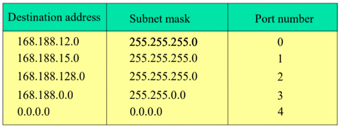
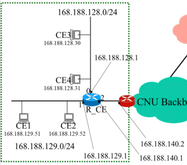
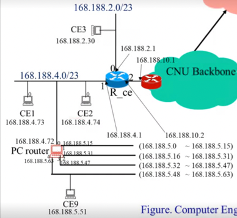
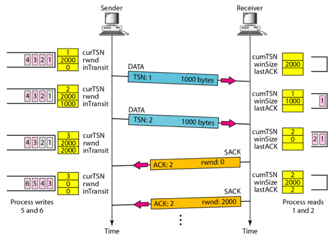

Fall 2021, CNU, Computer Networks by Prof. Sang-Ha Kim
Overview
- Physical layer, Data link layer, Network layer, Transport layer, Application layer 각각에 대한 주된 역할(기능)을 적으라
- Physical layer : bit를 전기 신호로 전송함에 있어서 통신 회선에서 발생할 수 있는 물리적인 오류를 최소화 하는 것을 목표로 하는 계층
- Data link layer : Hop to Hop(Node to Node)통신의 무결성을 보장하기 위한 계층. Hop to Hop의 통신에 있어서 에러가 났을 경우 Error Detection과 Correction의 방법을 이용해 에러를 해결하고, 물리주소 체계를 이용해 목적지 Node를 정확히 찾아가게 하는 것을 담당한다.
- Network layer : Source to Destination 통신을 가능하게 해주는 계층. 논리 주소 체계를 이용해 여러번의 Hop to Hop 통신을 거치는 과정에서 원래의 목적지까지 도달할 수 있는 경로를 제공한다.
- Transport layer : Process to Process 통신의 무결성을 보장하기 위한 계층. Routing시에 발생할 수 있는 Queue Overflow 에러를 해결하고, Port번호를 통해 Destination host의 특정 Process에게 데이터가 전달될 수 있도록 한다.
- Application layer : User application에서 네트워크 통신을 이용할 수 있도록 하는 것을 제공하는 계층
- 각 Layer를 코드로 구현함에 있어서, Transparency의 의미와 숨겨여야 하는것, 그렇지 않은 것에 대해 설명하고(1) Send와 Receive 함수 Call의 방향성에 대해 설명하시오(2)
- Layer를 코드로 구현함에 있어서 Transparency는 각 계층을 Encapsulation하여 다른 계층의 작동 원리를 알지 못하게 하는 것이다. 따라서 어떤 계층에서의 작동 과정과 자료 구조는 다른계층에서 알 수 없도록 숨겨져야 한다. 하지만 다른 계층의 주소는 숨길 필요가 없다.
- 네트워크 모델은 계층 구조로 설계되었기 때문에 항상 함수 Call은 상위계층에서 하위 계층으로 이루어져야 하고 하위 계층에서는 상위 계층의 함수를 호출할 수 없다. 따라서 Receive함수의 경우에도 상위계층에서 하위 계층의 Receive함수를 호출하고, 하위 계층에서 상위 계층으로의 데이터 이동은 해당 함수의 반환값으로써 상위계층으로 전달되게 된다.
Network Layer
Packet Switching
- Packet Switching을 제공하는 장비의 이름을 적고(1) Packet Switching의 개념을 해당 장비의 구조와 연관지어서 설명하시오(2)
- Packet Switching을 제공하는 장비의 이름은 Router이다
- Router는 여러개의 Network Interface가 장착되어 있는데 각각의 Network Interface에는 송수신 통신 회선이 연결되어 있다. 또한 각각의 Network Interface은 수신된 패킷들이 저장되는 Input Queue와, 송신할 패킷들이 저장되는 Output Queue로 구성된다. Packet Switching이라는 것은 어떤 한 Network Interface의 Input Queue에 있는 패킷을 Routing 을 통해 어떤 Network Interface의 Output Queue로 옮겨야 되는지를 정하고, 해당 Output Queue로 Packet을 옮기는 것을 의미한다.
- Datagram과 Virtual Circuit에 대해 이들이 시작될때 공통적으로 행해지는 작업에 대해 적고(1) 이들의 핵심적인 차이점에 대해 Connection-oriented, Connectionless, Orderly Delivery의 개념을 포함하여 적어보거라(2). 그리고 각 Packet Switching방법을 사용하는 프로토콜(서비스) 에 대해 적어보고, 어느것이 먼저 세상에 나왔는지를 그 이유와 함께 적어보거라(3). 또한 각각의 방법이 가지는 강점에 대해 설명해보아라(4).
- 우선 상위 계층에서 내려온 데이터를 Packet단위로 단편화하고, 각각 Packet들에 대해서 논리주소 등의 정보를 포함한 Packet Header를 붙이는 작업은 Datagram과 Virtual Circuit 모두 행해진다.
- 이들의 핵심적인 차이점은 단편화한 Packet들이 어떻게 목적지까지 도달하게 되는지에 있다.
- Datagram은 단편화된 Packet들이 어떠한 경로를 통해 목적지까지 도달하는지에 대해 제약을 걸지 않는 반면, Virtual Circuit의 경우에는 단편화된 패킷이 모두 같은 경로를 통해 목적지까지 도달할 것을 요구한다.
- 여러개의 패킷들이 같은 경로를 따라 목적지까지 가기 위해서는 패킷들이 전송되기 전 미리 경로를 설정하는 작업을 수행하게 되는데, 이것을 Connection이라고 한다. 따라서 Virtual Circuit의 경우에는 Connection을 수행해야 하므로 Connection-oriented Packet Switching인 것이고, Datagram의 경우에는 Connection이 필요가 없으므로 Connectionless Packet Switching이라고 말할 수 있다.
- 항상 같은 경로를 따라가야 하는지의 여부는 패킷의 도착 순서에도 영향을 미치게 된다. 항상 같은 경로를 따라 가야 하는 Virtual Circuit의 경우에는 패킷이 전송 순서대로 경로를 지나가기 때문에 목적지까지 도달할때도 송신의 순서와 동일하게 수신된다. 하지만 Datagram의 경우에는 경로가 정해져있지 않기 때문에 먼저 송신된 패킷이라 할 지라도 돌아가는 경로가 선택된다면 나중에 송신된 패킷보다 더 늦게 수신될 수 있다. 따라서 결과적으로 Virtual Circuit의 경우에는 순서가 지켜지기 때문에 Orderly Delivery를 지원한다고 하고, Datagram은 순서를 보장할 수 없기 때문에 Orderly Delivery를 지원하지 않는다고 한다.
- IP의 경우에 Datagram 방식을 사용하고 IP를 제외한 거의 모든 프로토콜(대표적으로 유선전화)이 Virtual Circuit을 사용한다. 옛날 사람들은 송신한 순서와 동일하게 수신되는 것이 자연스럽다고 생각했기 때문에, Virtual Circuit이 먼저 발명되었고 이후에 Datagram방식이 등장하게 된다.
- Virtual Circuit의 경우에는 송수신 순서가 일치하기 때문에 순서가 중요한 통신에 강점이 있다. 하지만 송신 도중 Intermediate Node가 불능이 될 경우에는 대체 경로가 없기 때문에 나머지 패킷이 전부 소실되게 된다. 반면에 Datagram의 경우에는 위와 같은 경우 다른 경로를 선택하여 갈 수 있기 때문에 패킷이 도착할 확률이 더 높다는 강점이 잇다.
- 아래와 같은 통신망이 있다고 해보자.
B → D로 Virtual Circuit을 이용해 패킷을 전송하려고 할때, Connection Phase, Data Transfer Phase, Disconnection Phase에 대해 이동하는 패킷의 구조와 Virtual Circuit Table의 변화를 포함하여 설명하시오(단, 이동 경로와 Virtual Circuit Number는 임의로 정해도 된다)
- 우선 이동 경로는 B → 1 → 2 → 3 → D이고, Virtual Circuit Number는 0이라고 가정한다.
- Connection Phase에서는 Packet Type이 Connect이고, Virtual Circuit Number를 0으로 하며, 송신지는 B, 수신지는 D로 하여 패킷을 송신하게 된다.
- 이때 B에서의 다음 수신지는 1이기 때문에 B의 Virtual Circuit Table에는 Virtual Circuit Number 0에 대해, 1로 패킷을 보내라는 정보가 저장된다. 즉, Virtual Circuit Table에VC# INPUT OUTPUT의 형태로 저장된다는 전제 하에, VC0 - 1이 저장된다(B는 자신이 패킷을 보내는 경우이므로 Input에는 적을 것이 없다)
- 1번에 도착한 Connect Packet은 이제 2번으로 전달된다. 따라서 1의 Virtual Circuit Table에는 VC0 B 2가 저장된다. 이것은 Virtual Circuit Number 0인 패킷이 B로 부터 전달된다면, 2로 전달하라는 의미로 해석할 수 있다.
- 2번에 도착한 Connect Packet은 3번으로 전달된다. 마찬가지로 2번의 Virtual Circuit Table에는 VC0 1 3이 저장되고, 이것은 Virtual Circuit Number 0번인 패킷이 1번으로부터 전달된다면, 3번으로 전달하라는 뜻으로 해석할 수 있다.
- 3번에 도착한 Connect Packet은 D로 전달된다. 3번에서도 마찬가지로 VC0 2 D가 Virtual Circuit Table에 저장된다.
- D에 도착한 Connect Packet에 의해 D의 Virtual Circuit Table에는 VC0 3 -이 저장되고 Connect Phase가 끝난다
- Data Transfer Phase에서는 단편화된 패킷들이 송신된다. 하지만 이때 패킷의 헤더에는 송수신 논리주소 대신, Virtual Circuit Number와 단편화된 패킷 중 몇번째인지를 나타내는 Sequence Number가 들어간다. 송수신 논리주소 대신 Virtual Circuit Number로 경로를 찾아갈 수 있는 이유는, 경로상의 모든 노드의 Virtual Circuit Table에 해당 Virtual Circuit Number에 대한 다음 노드가 명시되어 있기 때문이다.
- 단편화된 패킷 중 하나에 대해서만 예시를 들어보면, B에서 Virtual Circuit Table을 조회해본 결과 VC0의 다음 목적지는 1인 것을 알 수 있고, 1로 전달된다.
- 패킷이 1에 도착한 이후에는 1의 Virtual Circuit Table에 VC0 B 2라고 명시되어 있고, 도착한 패킷이 VC0이며 바로 B로부터 전달되었기 때문에 2번으로 해당 패킷을 전달해야 된다는 것을 알게 된다. 따라서 패킷은 2로 전달된다.
- 패킷이 2에 도착한 이후에도 동일한 작업이 이루어진다. 2의 Virtual Circuit Table에 VC0 1 3이라고 명시되어 있고, VC0인 패킷이 1로부터 전달되었으므로 3번으로 해당 패킷을 전달해야된다는 것을 알게 된다. 따라서 패킷은 3으로 전달된다.
- 패킷이 3번으로 도착한 이후에도 Virtual Circuit Table의 VC0 2 D에 따라 VC0인 2로부터 전달된 패킷을 D로 전달한다.
- 해당 패킷이 D까지 전달이 되었고 나머지 패킷들도 동일한 과정을 거치며 D까지 전달되게 된다.
- 단편화된 패킷들이 전부 전달된 이후에는 Disconnect Phase에 진입한다. Disconnect Phase를 수행하는 이유는, 각각의 노드가 Data Transfer가 끝난지 모르기 때문에, 송신지에서 패킷을 전부 송신하고 난 뒤에는 Disconnect를 수행해 경로상의 노드의 Virtual Circuit Table에서 해당 Row를 지워 메모리를 절약하기 위해서이다.
- 따라서 B는 Packet type을 Disconnect로 하고 Virtual Circuit Number를 0으로 명시하여 Disconnect Packet을 준비한 후에 Virtual Circuit Table을 조회하여 VC0에 대한 패킷이 1로 가야된다는 것을 알아낸다. 따라서 해당 패킷을 1로 전달한 후에, VC0에 대한 Row를 삭제한다.
- Disconnect Packet이 1에 도착한 이후에는 Virtual Circuit Table에 따라 2번으로 전달되어야 한다는 것을 알아낸다. 따라서 2번으로 Disconnect Packet을 전달하고 VC0에 대한 Row를 삭제한다.
- Disconnect Packet이 2와 3에 도착했을 때에도 마찬가지로 Virtual Citcuit Table에서 VC0에 대한 다음 행선지 정보를 얻어내고, Disconnect Packet을 전달한 뒤, Virtual Circuit Table에서 삭제하는 과정이 이루어진다.
- 마지막으로 D에 도착했을 때에도 Disconnect Packet이 VC0이고 3번으로부터 전달되었다는 것을 확인한 후에 Virtual Circuit Table에서 매치되는 Row를 삭제한다. D가 최종 목적지이기 때문에 Disconnect Packet은 다른 곳으로 전달되지 않고 Disconnect Phase가 종료된다.
- 따라서 Disconnect Phase가 진행되며 Disconnect Packet이 전달됨에 따라 경로상의 모든 Virtual Circuit Table에서 VC0가 삭제되게 되는 것이다.
- Packet은 송신 후 Packet Header는 Hop to Hop을 이동함에 에 따라 변경되고 Frame Header는 최종 수신지에 도착할때까지 변경되지 않는다(O / X)
- X → 반대이다 : Packet Header가 변경되지 않고 Frame Header는 Intermediate Node를 거치며 송수신 주소가 새로이 설정된다.
- 아래왜 같은 통신망이 있다고 해보자
이때,
- Connect: H1 → A → B → D → H2
- Connect: H2 → D → B → E → H4
- Connect: H5 → E → C → A → H1
- Disconnect: H2 → D → B → E → H4
- Disconnect: H1 → A → B → D → H2
- Disconnect: H5 → E → C → A → H1
위와 같은 쿼리에 대해 Virtual Circuit Table의 변화를 보이시오(단, Table의 구조는 다음과 같음 : InPort | InVC# | OutPort | OutVC#)
- (1)
A 0 0 1 0 ADD
B 0 0 1 0 ADD
D 0 0 1 0 ADD
- (2)
A 0 0 1 0
B 0 0 1 0
1 0 2 0 ADD
D 0 0 1 0
1 0 0 0 ADD
E 1 0 3 0 ADD
- (3)
A 0 0 1 0
2 0 0 0 ADD
B 0 0 1 0
1 0 2 0
C 2 0 0 0 ADD
D 0 0 1 0
1 0 0 0
E 1 0 3 0
4 0 0 0 ADD
- (4)
A 0 0 1 0
2 0 0 0
0 1 1 1 ADD
B 0 0 1 0
1 0 2 0
0 1 1 1 ADD
C 2 0 0 0
D 0 0 1 0
1 0 0 0
0 1 2 0 ADD
E 1 0 3 0
4 0 0 0
- (5)
A 0 0 1 0
2 0 0 0
0 1 1 1
B 0 0 1 0
1 0 2 0 DEL
0 1 1 1
C 2 0 0 0
D 0 0 1 0
1 0 0 0 DEL
0 1 2 0
E 1 0 3 0 DEL
4 0 0 0
- (6)
A 0 0 1 0 DEL
2 0 0 0
0 1 1 1
B 0 0 1 0 DEL
0 1 1 1
C 2 0 0 0
D 0 0 1 0 DEL
0 1 2 0
E 4 0 0 0
- (7)
A 2 0 0 0 DEL
0 1 1 1
B 0 1 1 1
C 2 0 0 0 DEL
D 0 1 2 0
E 4 0 0 0 DEL
- 최종
A 0 1 1 1
B 0 1 1 1
D 0 1 2 0
- Service Provider, UNI, NNI, External Operation, Internal Operation의 용어에 대해 무엇의 약자인지, 그리고 개념은 무엇인지 적어보거라
- Service Provider: 라우터 같은 네트워크 단말들과 통신 회선 구조를 설계하고 시공하여 사용자 혹은 네트워크 단말 간의 통신을 가능하게 해주는 업자
- UNI(User Network Interface): 사용자 단말과 네트워크 단말 간의 통신
- 이러한 유형은 사용자와 밀접하게 접해있다는 점에서 겉으로 드러나기 때문에 External Operation이라고 한다
- NNI(Network Node Interface): 네트워크 단말 간의 통신
- 이러한 유형은 사용자에게 직접적으로 보이지 않고 가려져 있기 때문에 Internal Operation이라고 한다
- External 과 Internal Operation에서의 Packet Switching을 이원화하는 이유와 이원화 경우의 수 대표적인 세가지를 적어보거라
- External과 Internal Operation에서의 Packet Switching을 이원화하는 것은 Service Provider가 NNI에서 일어나는 일을 보안상의 이유에 의해 숨기고 싶어하기 때문이다
- 따라서 UNI를 Datagram을 사용하고 NNI는 Virtual Circuit을 사용하거나, UNI를 Virtual Circuit을 이용하고 NNI를 또 다른 Virtual Circuit을 이용하거나 UNI를 Virtual Circuit을 이용하고 NNI를 Datagram을 이용하는 식의 이원화 방법을 주로 사용하게 된다
Routing
- 2 level Hierarchy Routing Table의 개념과 이것이 필요한 이유를 netid, hostid의 용어를 이용하여 설명하여라
- Routing Table은 기본적으로 입력으로 받은 IP주소를 가지고 어느 Port로 나가야 할지를 결정하는데 IP주소 전체를 매칭하여 Port를 결정하는 방식으로는 Routing Table의 Row가 너무 많아지게 된다는 문제점이 있다
- 왜냐하면 이 세상에 존재하는 IP주소 전체에 대해 매칭되는 Port를 구성해야 하기 때문에 그만큼 저장해야 되는 Row도 많아지고 검색의 속도도 느려지게 된다
- 따라서 IP주소의 앞 일정 부분을 netid로 하고 나머지 뒷부분을 hostid로 정한 다음 netid만을 이용해서 Port와 매칭하는 방식으로 Row의 수를 획기적으로 줄일 수 있다
- 즉, 해당 Port와 연결된 Host들은 모두 같은 netid를 갖고 hostid만 달라지게 구성한다면 netid만을 가지고 Port를 결정해도 해당 Host에 도달할 수 있기 때문
- IP주소 체계의 A, B, C Class의 IP 주소 범위에 대해 적어보거라
- A 클래스는 비트가 0으로 시작하고 그 이후 7개의 비트가 netid이기 때문에 00000001 … ~ 01111111 …의 범위를 가지게 된다. 따라서 1.0.0.0부터 127.255.255.255까지의 IP주소가 A Class 에 포함되게 된다
- B클래스는 비트가 10으로 시작하고 그 이후 14개의 비트가 netid이기 때문에 10000000 00000000 … ~ 10111111 11111111 …의 범위를 가지게 된다. 따라서 128.0.0.0부터 191.255.255.255의 IP주소가 B클래스에 포함된다
- C클래스는 비트가 110으로 시작하고 그 이후 21개의 비트가 netid를 구성한다. 따라서 11000000 00000000 00000000 … ~ 11011111 11111111 11111111 …의 범위가 포함되고, 결과적으로 192.0.0.0부터 223.255.255.255까지의 IP주소가 C Class에 포함된다.
- netid와 hostid가 발급되는 과정에 대해 간략하게 설명해보거라
- netid는 Network Information Center에서 충남대 같은 특정 기관에 발급해준다. netid를 발급받은 기관은 자신의 산하에 있는 host들에게 hostid를 하나씩 발급해주게 된다
- Gateway router와 Gateway가 아닌 Router의 Routing 방법의 차이에 대해 설명해보거라
- Gateway Router는 host와 직접적으로 연결되어있는 Router를 뜻하는데 이때에는 논리주소 전체(netid + hostid)를 이용해 Port 를 결정한다. 반면, Gateway가 아닌 Router의 경우에는 논리주소 전체가 아닌 netid만을 이용해 Routing을 하게 된다.
- 아래 그림의 Gateway Router의 Routing Table을 작성하시오(단, Table은 DestinationAddr | SubnetMast | PortNum으로 구성되어 있다고 가정한다). 또한, 각 Port에는 몇개의 Host가 연결될 수 있는지 적으시오

- Routing Table
Destination SubnetMask PortNum
198.66.168.0 255.255.255.192 0
198.66.168.64 255.255.255.192 1
198.66.168.128 255.255.255.192 2
198.66.168.192 255.255.255.192 3
0.0.0.0 0.0.0.0 4
- 어떤 라우터가 Default Destination Port를 제외한 모든 Port의 Subnet Mask가 /27이었다면 해당 라우터는 Destination Port를 제외하고 몇개의 Port가 존재하는지(1), 그리고 하나의 Port에는 몇개의 Host가 연결되는지(2) 적으시오(단, 이 라우터에 연결되어 있는 Host의 총 갯수는 256개 이고 모두 같은 C Class netid를 가진다고 가정한다.)
- Subnet Mask가 11111111 11111111 11111111 11100000이기 때문에 Port의 총 갯수는 2^3 8개 이고, 하나의 Port에 연결되어 있는Host의 갯수는 2^5 32개 이다
Port들이 모두 동일한 Subnet Mask를 가지고 해당 라우터가 하나의 C Class netid를 가지는 host전체를 커버한다면 Port의 총 갯수는 2^(Subnet Mask의 마지막 8비트 중 1의 갯수)와 같고 하나의 Port와 연결된 Host의 갯수는 2^(Subnet Mask의 마지막 8비트 중 0의 갯수)와 같다
- 어떤 라우터의 Forward Table이 아래 그림과 같을 때, 168.188.15.5, 168.188.7.32, 168.192.32.0세 IP가 Routing되는 Port Number를 과정과 함께 적으시오

- 168.188.15.5 :
- 첫번째 Row의 Subnet Mask인 255.255.255.0과 Bitwise AND를 수행하면 그의 결과는 168.188.15.0이다. 따라서 Destination Address와 일치하지 않으므로 0번 포트로 Routing되지 않는다.
- 두번째 Row의 Subnet Mask인 255.255.255.0과 Bitwise AND를 수행하면 그의 결과는 168.188.15.0이다. 따라서 Destination Address와 일치하므로 1번 포트로 Routing되게 된다.
- 168.188.7.32 :
- 첫번째 Row의 Subnet Mask인 255.255.255.0과 Bitwise AND를 수행하면 그의 결과는 168.188.7.0이다. 따라서 Destination Address와 일치하지 않으므로 0번 포트로 Routing되지 않는다.
- 두번째 Row의 Subnet Mask인 255.255.255.0과 Bitwise AND를 수행하면 그의 결과는 168.188.7.0이다. 따라서 Destination Address와 일치하지 않으므로 1번 포트로 Routing되지 않는다.
- 세번째 Row의 Subnet Mask인 255.255.255.0과 Bitwise AND를 수행하면 그의 결과는 168.188.7.0이다. 따라서 Destination Address와 일치하지 않으므로 2번 포트로 Routing되지 않는다.
- 네번째 Row의 Subnet Mask인 255.255.0.0과 Bitwise AND를 수행하면 그의 결과는 168.188.0.0이다. 따라서 Destination Address와 일치하므로 3번 포트로 Routing된다.
- 168.192.32.0 :
- 첫번째 Row의 Subnet Mask인 255.255.255.0과 Bitwise AND를 수행하면 그의 결과는 168.192.32.0이다. 따라서 Destination Address와 일치하지 않으므로 0번 포트로 Routing되지 않는다.
- 두번째 Row의 Subnet Mask인 255.255.255.0과 Bitwise AND를 수행하면 그의 결과는 168.192.32.0이다. 따라서 Destination Address와 일치하지 않으므로 1번 포트로 Routing되지 않는다.
- 세번째 Row의 Subnet Mask인 255.255.255.0과 Bitwise AND를 수행하면 그의 결과는 168.192.32.0이다. 따라서 Destination Address와 일치하지 않으므로 2번 포트로 Routing되지 않는다.
- 네번째 Row의 Subnet Mask인 255.255.0.0과 Bitwise AND를 수행하면 그의 결과는 168.192.0.0이다. 따라서 Destination Address와 일치하지 않으므로 3번 포트로 Routing되지 않는다.
- 다섯번째 Row의 Subnet Mask인 0.0.0.0과 Bitwise AND를 수행하면 그의 결과는 0.0.0.0이다. 따라서 Destination Address와 일치하므로 4번 포트로 Routing된다.
- 어떤 Host의 IP를 설정할 때 IP주소는 192.168.32.5, Subnet Mask는 255.255.255.0, Default Gateway는192.168.32.1로 설정했을 때 해당 Host한테 생성되는 Routing Table을 그리시오(단, Routing Table의 구조는 Destination | Subnet Mask | Gateway | Flag | Interface로 구성되어 있으며 Interface는 0번만이 장착되어있다고 가정한다)
- Routing Table
Destination SubnetMask Gateway Flag Inf
192.168.32.0 255.255.255.0 Connected 0
0.0.0.0 0.0.0.0 192.168.32.1 G 0
- 아래와 같은 그림에서 라우터 R_CE의 Routing Table을 그려라 (단, Routing Table의 구조는 Destination | Subnet Mask | Gateway | Flag | Interface로 구성되어 있다고 가정한다)

- Routing Table
Destination SubnetMask Gateway Flag Inf
168.188.128.0 255.255.255.0 Connected 0
168.188.129.0 255.255.255.0 Connected 1
168.188.140.0 255.255.255.0 Connected 2
0.0.0.0 0.0.0.0 168.188.140.2 G 2
- 아래와 같은 네트워크 구조에서 CE1에서 CE2로 패킷을 전송하는 과정과 CE1에서 CE3으로 패킷을 전송하는 과정에 대해 전송되는 패킷의 송수신 논리, 물리 주소를 포함하여 설명하시오(단, 물리주소는 Node / Host의 이름과 같다고 가정한다)


- CE1 → CE2 : CE2의 IP와 CE1의 Routing Table을 이용해 Routing을 하면 첫번째 Row의 Subnet Mask와 Masking을 한 결과가 168.188.129.0이기 때문에 첫번째 Row에 매칭된다. 이때 Gateway가 Connected이기 때문에 ARP를 통해 물리주소를 알아내고, 따라서 송신 물리주소는 CE1, 수신 물리주소는 CE2, 송신 IP는 168.188.129.51, 수신 IP는 168.188.129.52로 하여 패킷을 전송하는 것으로 최종 목적지에 도달한다.
- CE1 → CE3 : CE3의 IP와 CE1의 Routing Table을 이용해 Routing을 하면 첫번째 Row의 Subnet Mask와 Masking을 한 결과가 168.188.128.0이기 때문에 첫번째 Row와 매칭되지 않는다. 이후 두번째 Row의 Subnet Mask와 Masking을 하면 결과가 0.0.0.0이기 때문에 두번째 Row와 매칭되고, 이때의 Gateway가 168.188.129.1이기 때문에 해당 IP로 ARP를 보내 물리주소를 알아내고 패킷을 전송한다. 따라서 송신 물리주소는 CE1, 수신 물리주소는 R_CE, 송신 IP는 168.188.129.51, 수신 IP는 168.188.128.30으로 하여 패킷을 전송한다.
- 따라서 패킷이 Router의 Interface 1에 전송되는데, 수신된 패킷의 수신 IP주소와 R_CE의 Routing Table의 첫번째 Row의 Subnet Mask를 Masking하면 168.188.128.0이기 때문에 첫번째 Row에 매칭된다. 이때의 Gateway가 Connected이기 때문에 Interface 0에 연결된 Subnet으로 ARP를 보내 수신 IP에 해당하는 물리주소를 알아낸 뒤 송신한다. 따라서 이때의 송신 물리주소는 R_CE, 수신 물리주소는 CE3, 송신 IP는 168.188.129.51, 수신 IP는 168.188.128.30으로 패킷을 전송해 최종 목적지에 도달한다.
위의 문제에서는 물리주소를 Node / Host이름과 일치시켰기 때문에 Interface에 따라 물리주소가 달라지는 것이 보이지 않는다 - CE1에서 R_CE로 패킷을 전송할때는 R_CE의 Interface 1에 해당하는 물리주소가 수신 물리주소가 되고, R_CE에서 CE3으로 패킷을 전송할때는 Interface 0에 해당하는 물리주소가 송신 물리주소가 된다.
- 장대동에 거주하는 강혜종이는 이번에 새로운 컴퓨터를 사서 IP를 설정하려고 한다. 그가 속한 Subnet은 192.168.2.0/24인데, 실수로 Subnet Mask를 255.255.0.0을 설정했다. 이때, 같은 Subnet에 속하는 Host와 통신이 이루어지는지의 여부와, 다른 Subnet에 속하는 Host와 통신이 이루어지는 경우와 이루어지지 않는 경우애 대해 설명하시오
- 강혜종이의 IP주소가 192.168.2.3이라고 가정하면, 강혜종이의 Routing Table은 다음과 같이 설정된다
Destination SubnetMask Gateway Flag Inf
192.168.0.0 255.255.0.0 Connected 0
0.0.0.0 0.0.0.0 192.168.2.1 G 0
- 같은 Subnet에 수신지가 존재하는 경우에는 통신이 이루어진다. 왜냐하면 가령 192.168.2.5에게 패킷을 전송하려고 하는 경우, Masking의 결과가 192.168.0.0이고, 이것은 Routing Table의 첫번째 Destination Address와 매치되기 때문에 같은 Subnet안에서 ARP를 전송하고, 수신지가 같은 Subnet에 있기 때문에 수신 물리주소를 응답받을 수 있다.
- 다른 Subnet에 수신지가 존재할때 통신이 안되는 경우는 예를 들면 192.168.3.0/24 Subnet으로 패킷을 전송하려고 하는 경우이다. 이때에는 다른 Subnet에 있기 때문에 Gateway로 패킷을 전송한 다음 Routing되어 다른 Subnet으로 빠져나가게 해야 하는데, 강혜종이의 Routing Table을 돌려봐도 Masking 결과가 192.168.0.0이 나와 첫번째 Row에 매치되어 Gateway가 Connected이므로 같은 Subnet안에서 ARP를 요청한다. 하지만 실제로는 다른 Subnet에 있기 때문에 요청한 물리주소를 응답받을 수 없고, 따라서 통신에 실패하게 된다
- 하지만 다른 Subnet에 수신자가 존재할때 통신이 되는 경우는 예를 들면 192.188.4.0/24 Subnet으로 패킷을 전송하려고 할 때이다. 이때에는 강혜종이의 Routing Table로 Masking을 하면 192.188.0.0이므로 첫번째 Row에 매칭되지 않아 패킷이 Gateway로 전달되고, 그 이후로는 정상적인 과정을 거쳐 통신이 이루어지기 때문이다.
- 아래와 같은 네트워크 구조에서 Proxy Router인 PC Router를 거쳐 CE3과 CE9가 양방향으로 통신하는 과정에 대해 전송되는 패킷의 송수신 IP주소와 물리주소를 포함하여 설명하시오

- CE9 → CE3 :
- CE9의 Routing Table을 확인한 결과 다른 Subnet에 존재하고 Gateway로 패킷을 전달해야 된다는 것을 확인함. 따라서 Gateway로 ARP를 날리고 송신하여 결과적으로 송신 물리주소는 CE9, 수신 물리주소는 PCRouter, 송신 IP는 168.188.5.51, 수신 IP는 168.188.2.30으로 하여 패킷을 전송한다.
- PC Router의 Routing Table을 확인한 결과 다른 Subnet에 존재하여 Gateway로 패킷을 전달해야 된다는 것을 확인함. 따라서 Gateway로 ARP를 날리고 송신하여 결과적으로 송신 물리주소는 PCRouter, 수신 물리주소는 R_CE, 송신 IP는 168.188.5.51, 수신 IP는 168.188.2.30으로 하여 패킷을 전송한다.
- R_CE의 Routing Table을 확인한 결과 Interface 0의 Subnet에 존재한다는 것을 확인함. 따라서 수신지 IP로 ARP를 날리고 송신하여 결과적으로는 송신 물리주소는 R_CE, 수신 물리주소는 CE3, 송신 IP는 168.188.5.51, 수신 IP는 168.188.2.30으로 하여 패킷을 전송하는 것으로 통신이 완료된다
- CE3 → CE9 :
- CE3의 Routing Table을 확인한 결과 다른 Subnet에 존재하고 Gateway로 패킷을 전달해야 된다는 것을 확인한다. 따라서 Gateway에 대해 ARP 요청을 해 물리주소를 받아오고 송신한다. 결과적으로 송신 물리주소는 CE3, 수신 물리주소는 R_CE, 송신 IP는 168.188.2.30, 수신 IP는 168.188.5.51로 패킷을 전송한다.
- R_CE의 Routing Table을 확인한 결과 Interface 1의 Subnet에 존재하는 것을 확인하고 Interface 1에 연결된 Subnet에 ARP요청을 한다. 이때, PC Router는 ARP요청이 자신한데 온 것은 아니지만, 자신한테 연결되어 있는 Host에 대한 ARP요청인 것을 확인하고 자신의 물리주소를 ARP 응답으로 전달한다. 따라서 R_CE는 송신 물리주소는 R_CE, 수신 물리주소는 PCRouter, 송신 IP는 168.188.2.30, 수신 IP는 168.188.5.51로 패킷을 전송하게 된다
- PCRouter의 Routing Table을 확인한 결과 Interface 4의 Subnet에 존재하는 것을 확인하고 Interface 4에 연결된 Subnet에 ARP요청을 하여 물리주소를 받아온다. 결과적으로 송신 물리주소는 PCRouter, 수신 물리주소는 CE9, 송신 IP는 168.188.2.30, 수신 IP는 168.188.5.51로 하여 패킷을 전송하고 통신이 완료된다
- Routing Table에서 Hop 혹은 Metric으로 표기되는 값에 대해 설명하시오
- 현재의 Router에서 최종 목적지까지 도달하기까지 거쳐가야 되는 Router의 숫자를 뜻한다.
- Routing Table을 이용해 알아낸 Next-Hop의 IP주소는 패킷의 Tailer에 붙어 하위계층으로 전달된다(O / X)
- X → Routing Table을 통해 알아낸 Next-Hop의 IP주소는 하위계층에서 ARP를 진행하기 위해 하위계층으로 전달되는데, 기존의 Packet의 어딘가에 저장되는 것이 아니고 상위계층에서 하위계층의 Procedure를 호출할때 Argument로 전달하게 된다
IPv4
- IP가 Datagram을 사용하는 이유를 Heterogeneous Network의 용어를 포함해서 설명하시오
- IP망은 전 세계에 퍼져 있는데, IP망이 Heterogeneous Network, 즉, 환경이 항상 일정한 네트워크가 아니기 때문에 Connection을 구축하고 송신하는 것은 불가능하기 때문이다.
- IPv4를 대표하는 두가지 중요한 특징에 대해 설명하시오
- 첫번째는 Connectionless Datagram Protocol, 즉, Connection을 하지 않아 순서가 보장되지 않는 Datagram을 사용하는 프로토콜이라는 것이다
- 두번째는 Unreliable, Best-effort Delivery Service이다. 이것은 에러에 대해 신경쓰지 않고 목적지까지 최선을 다해 전송하는 것에만 초점이 맞춰져있다는 뜻이다.
- IPv4의 Header의 필드인 HLEN, Total Length에 대해 설명하고 HLEN의 최솟값과 그 이유, HLEN이 8이고 Total Length가 112일 경우 패킷의 Header, Option, Data가 각각 몇 바이트인지 설명하시오
- HLEN은 헤더의 크기를 4로 나눈 값을 의미하며, 이것은 물리계층에서 주로 4바이트 단위로 패킷을 전송하기 때문에 Header나 Option의 크기가 4의 배수가 되도록 설계했기 때문이다.
- Total Length는 패킷 하나의 전체 크기(byte단위)를 의미한다
- HLEN은 최솟값이 5인데, 왜냐하면 헤더에 반드시 포함되어야 하는 Mandatory Header의 크기가 20byte이기 때문이다.
- HLEN이 8라는 것은 32byte라는 소리이고, 그중 20byte가 Mandatory이기 때문에 나머지 12byte가 Option이다. 그리고 112byte에서 32bytee를 빼면 80byte가 되기 때문에 이것이 Data의 크기가 된다
- IPv4에서 Fragmentation이 필요한 이유와 1500byte로 Fragmentation하는 이유를 MTU의 용어를 사용하여 설명하덤둥. 또한, Router에서 단편화된 패킷을 받았을때 어떻게 행동하는지 서술하시오. 마지막으로 IPv4 패킷의 Header에서 Fragmentation과 관련된 필드 세가지를 적으시오
- Data link layer에서는 회선의 종류에 따라 한번에 보낼 수 있는 데이터의 크기가 달라진다 - 신뢰도가 높은 회선의 경우에는 한번에 많은 데이터를 보내도 에러가 자주 발생하지 않지만, 신뢰도가 낮은 회선의 경우에는 한번에 많은 데이터를 보냈다가 에러가 나면 해당 데이터를 다시 보내야 하기 때문에 한번에 많은 데이터를 보내는 것은 부담되기 때문
- 따라서 상위계층에서 내려온 데이터의 크기가 클 경우에는 Data link layer의 프로토콜에 따라 Fragmentation하여 하위계층으로 내려보낸다. 이때 Ethernet Protocol의 MTU(Maximum Transfer Unit)크기가 1500byte이기 때문에 1500byte로 Fragmentation하게 되는 것이다
- Router에서 Fragmentation된 패킷을 받았을 때에는 합쳐서 원본의 데이터로 변환한 다음, 송신하고자 하는 회선의 Data link layer protocol에 따라 다시 Fragmentation하여 전송하게 된다. - 이것은 수신된 회선의 Protocol과 송신하려고 하는 회선의 Protocol이 일치하지 않을 수 있기 때문이다.
- IPv4의 Header에는 Identification, Flag, Fragmentation Offset 이렇게 세가지 필드에 Fragmentation과 관련된 정보들이 들어가게 된다.
- IPv4 Header의 Protocol, Header Checksum, Time to Live 필드에 대해 간략하게 설명하시오
- Protocol Field는 상위 계층(Transport layer)의 프로토콜을 나타낸다
- Header Checksum은 IPv4가 목적지까지 도달하는 것에 초점이 맞춰져있는 프로토콜인데, Header가 망가져 있을 경우 송수신 주소를 제대로 알지 못하기 때문에 Header에 대해서만 Error Detection을 하는 용도이다.
- Time to Live는 어떤 패킷이 무한루프 경로에 빠지거나, 너무 먼 경로를 선택했을 경우에 해당 패킷을 죽여버리기 위한 일종의 목숨이다. 255부터 시작해 Hop을 하나 지날때마다 1씩 차감되는 방식으로 작동한다.
- IPv4의 Option인 No operation, End of option, Record route, Strict source route, Loose source route, Timestamp에 대해 간단하게 설명하시오
- No operation: IPv4 패킷에서 Option부분의 크기는 4의 배수가 되어야 하는데, Option 각각에 대해서는 4의 배수가 아니기 때문에 Option뒤에다가 붙여 Option하나에 대해 크기가 4의 배수가 될 수 있도록 해주는 Padding
- End of option: 위와 같은 이유로, Option필드의 총 크기를 4의 배수로 맞춰주기 위해 사용하는 Padding
- Record Route: IPv4 패킷이 이동하는 동안 거쳐간 Router를 기록해 어느 경로로 왔는지 알 수 있게 하는 옵션
- Strict Source Route: 해당 옵션에 지정되어있는 Router만 거쳐서 목적지에 도달해야 함을 강제하는 옵션. 해당 옵션에 지정되어있는 Router외에는 거쳐가면 안된다. 경로를 미리 지정하고 송신되는 경우.
- Loose Source Route: 해당 옵션에 지정되어 있는 Router를 반드시 거쳐서 목적지에 도달해야 함을 강제하는 옵션. 해당 옵션에 명시되어있는 Router는 반드시 거쳐가야 하고, 다른 Router는 거쳐가든 말든 상관없다
- Timestamp: 각각 Router를 거쳐가는데 소요된 시간을 기록하라는 옵션.
- IPv6의 가장 핵심적인 특징 두가지에 대해 적어보시오
- IPv6의 첫번째 특징은 주소 체계를 4byte에서 16byte로 늘리고 계층도 더 세분화해서 더 많은 IP주소를 수용할 수 있도록 한 것이다.
- IPv6의 두번째 특징은 On-demand hop to hop routing option으로, IPv4에서는 어떤 Router에서 Option의 정보가 필요하지 않음에도 그것들을 꺼내봐야 했었지만 IPv6에서는 필요할 때만 Option을 꺼내보도록 하여 Routing의 시간을 단축시켰다는 것이다.
- IPv4의 HLEN, Protocol, Header Checksum, Option 필드가 IPv6에서는 어떻게 바뀌었는지 서술하시오
- IPv6은 Header에 반드시 필요한 것들만 남겨 Base Header라는 이름으로 40byte의 고정크기로 만들고,
- IPv4에서의 Option의 경우에는 Extension Header라는 이름으로 바뀌되 여러개의 Next Header 필드를 통해 다음 Extension Header 필드의 위치를 가리키게 하여 필요한 경우에만 Extension Header에 참조할 수 있도록 했다.
- 따라서 IPv4의 HLEN은 Base Header의 크기가 40byte로 고정이기 때문에 삭제되었고,
- IPv4의 Protocol은 Next Header 필드의 Next Header Code라는 것을 이용해 Transport 계층의 프로토콜을 명시하도록 변경되었으며
- Header Checksum은 TCP같은 Transport 계층에서 Error Detection을 진행하기 때문에 필요가 없어져 삭제되었으며
- Option은 위에서 언급한 것처럼 Extension Header라는 이름으로 Base Header에서 참조를 통해 접근가능하도록 변경되었다.
- IPv6의 Next Header Field의 구조와 작동방식, Next Header가 참조되는 경우의 수에 대해 설명하시오
- Next Header는 다음에 나오는 Extension Header가 어떤 것인지를 알려주는 Next Header Code와 다음 Extension Header의 위치를 가리키는 참조값으로 구성되어 있고
- 해당 Extension Header 정보가 필요한 경우에는 꺼내보지만 필요 없는 경우에는 다음 Extension Header로 스킵하는 방식으로 작동된다
- IPv6의 경우에는 Dst Addr에 최종 목적지가 아닌 특정 Router의 주소가 들어가는데, 해당 Dst Addr에 도달하거나 첫번째 Next Header의 Next Header Code가 Hop-to-Hop Option일 경우에만 모든 Extension Header를 꺼내어 확인하고 그렇지 않은 경우에는 꺼내보지 않고 Bypass하게 된다
- 어떤 IPv6 패킷 헤더의 모습이 다음과 같다고 할때

해당 패킷이 전송되는 과정과 Extension Header의 변화를 서술하거라(단, 위의 그림에 나와있는 Extension Header는 Source Routing이라고 가정한다)
- S에서 출발한 패킷은 I1에 도달하기 전까지는 거쳐간 어느 Router에서도 Extension Header를 확인하지 않고 Bypass한다
- I1에 도달하고 나서는 Extension Header를 꺼내보고 그 다음 Dst가 I2인 것을 깨닫고 Dst값을 I2로 바꾼 뒤 Extension Header의 I2가 있는 자리에는 자신인 I1을 적는다. 또한 Left를 1 줄여 2로 만든다
- 그 다음에는 마찬가지로 I2에 도달할때까지 모든 Router가 Extension Header를 꺼내보지 않고 Bypass한다
- I2에 도달하고 나서는 Extension Header를 보고 다음 Dst가 I3인 것을 확인한다. 따라서 Dst를 I3로 바꾸고 I3자리에 I2를 채워넣는다. 마지막으로 Left를 1 줄여 1로 만든다
- I3에 도달하기 전에는 모든 Router에서 Bypass하다가 I3에 도달하고 나서는 Extension Header를 확인해 Dst를 D로 바꾸고, Extension Header의 D가 있던 자리에 I3을 넣은 뒤, Left를 1 줄여 0으로 만든다
- D에 도달하기 전까지는 모든 Router에서 Bypass하다가 D에 도달하고 나서는 Extension Header를 확인해 Left가 0인 것을 보고 자신이 최종 목적지임을 확인하고 상위계층으로 올려보내는 것으로 통신이 마무리된다.
Address Mapping
- ARP Cache에 대해 개념과 작동과정을 설명하고, 각 Entry의 지속시간에 대해 적어보아라
- ARP Cache는 ARP의 결과로 얻어낸 IP - 물리주소 쌍을 저장해 중복된 요청을 방지하는 방법이다
- 우선 ARP Request에는 ARP를 보내고 나서 해당 IP에 대한 물리주소는 아직은 알지 못하기 때문에 비워놓은 상태로 Cache Table에 추가한다. 물리주소가 비워져있기 때문에 Status는 Incomplete가 된다.
- ARP Request를 수신한 Host는 그것이 자신한테 온 요청인지의 여부와 상관없이, ARP Request에 적힌 Sender IP - 물리주소 쌍을 자신의 ARP Cache Table에 추가한다. 이때, ARP Request의 Sender IP, 물리주소는 NULL이 아니고 완성된 쌍이기 때문에 Sender IP - 물리주소 쌍은 Complete Status 의 상태로 저장되게 된다
- ARP Reply를 수신한 요청인은 응답으로 받은 IP-물리주소 쌍을 ARP Cache Table에 넣는다. 이로 인해 ARP Cache Table의 해당 부분이 Completed로 바뀌게 된다
- ARP Cache Table의 Entry는 Complete의 경우에는 20분간 지속되고 삭제되지만, Incomplete의 경우에는 3분간 지속되고 삭제된다.
- 자신을 위한 ARP Reply가 아닐지라도 ARP Reply에 적힌 IP - 물리주소를 이용해 자신의 ARP Cache Table을 업데이트한다(O / X)
- X → ARP Request는 Broadcast로 보내지기 때문에 해딩 ARP Request와 관련이 없다 하더라도 Discard하기 전에 Sender의 IP와 물리주소를 자신의 Cache Table에 추가하지만, ARP Reply의 경우에는 Broadcast가 아닌 ARP Request를 보낸 Host를 Destination으로 하여 발송되기 때문에, 자신한테 온 ARP Reply가 아닌 경우에는 Data link layer에서 Discard되게 된다.
- ARP의 송수신 과정과, Proxy ARP의 작동과정을 패킷에 담기는 송수신 물리주소와 IP주소와 함께 설명해라. 또한, 각 과정에 대해 ARP Cache Table의 변화를 추적해라
- ARP Cache Table에서 원하는 물리주소를 찾지 못해 ARP Request를 하게 되는 경우 Sender 의 IP, 물리주소는 자신의 것을 기입하고 Target의 IP는 상대방의 IP, Target 물리 주소는 알 수 없기 때문에 비워둔 상태로 전송하게 된다. 그리도 이때 ARP Cache Table에는 Incomplete Status 로 Target의 IP와 물리주소가 저장된다.
- ARP Request를 받은 Host는 일단 Request의 Sender IP & 물리주소를 자신의 ARP Cache Table에 Complete Status로 저장한다. 만일 자신한테 온 Request라면, Serder IP & 물리주소를 자신의 것으로 바꾸고 기존의 Sender IP & 물리주소는 Target IP & 물리주소로 옮겨서 ARP Reply를 하게 된다
- 만일 자신한테 온 ARP Request는 아니지만 자신이 Proxy Server로 기능하고 있고, 자신한테 연결된 Host한테 온 요청이라면 자신이 해당 Host를 대변하고 있기 때문에 자신의 물리주소를 응답한다. 즉, Request에 있던 Serder IP & 물리주소는 Target IP & 물리주소로 옮기고, Sender IP는 자신한테 연결된 Host 의 IP, Sender 물리주소는 자신의 물리주소를 응답한다. 이것은 연결된 Host에게 패킷을 보내기 위해서는 자신을 거쳐가야만 하기 때문에 자신한테 먼저 해당 패킷이 전달되게 하기 위함이다.
- ARP Reply를 받은 요청자는 Reply에 들어있던 Sender IP & 물리주소를 자신의 ARP Cache Table에 업데이트한다. 이때 미완성으로 남아있던 해당 ARP Cache Table Entry가 완성되기 때문에 Status가 Completed로 전환된다.
- ARP Packet의 각 Field에 대해 들어가게 되는 값과 연관지어서 설명하시오.(단, Field는 Hardware Type, Protocol Type, Hardware Length, Protocol Length, Operation이 있다)
- Hardware Type은 Data link layer의 protocol을 의미하는 것으로 Ethernet의 경우에는 0x0001이 들어간다.
- Protocol Type은 Netwoek layer의 protocol을 의미하는 것으로 IP의 경우에는 0x0800, ARP의 경우에는 0x0806이 들어간다.
- Hardware Length의 경우에는 물리주소의 길이를 뜻하는 것으로 Ethernet 주소는 6바이트이기 때문에 0x06이 들어간다
- Protocol Length는 논리주소의 길이를 뜻하는 것으로 IP주소는 4바이트이기 때문에 0x04가 들어간다
- Operation은 해당 패킷의 용도를 뜻하는 것으로 ARP Request의 경우 1, Reply의 경우 2, RARP Request의 경우 3, RARP Reply의 경우 4가 들어간다.
- RARP에 대해 무엇의 약자인지, 이것의 개념은 무엇인지, 이런 것이 필요하게 된 배경은 무엇인지 적으라
- RARP는 Reverse Address Resolution Protocol로 물리주소를 이용해 논리주소를 알아내는 프로토콜이다.
- 옛날의 Time sharing environment에서는 서버의 물리주소는 알지만 논리주소를 모르는 경우가 종종 있었기 때문에 필요성이 제기되었다
- RARP는 각 Subnet마다 RARP Server를 하나 두는 식으로 구현된다. 해당 Server는 Subnet의 모든 IP - 물리주소 쌍을 알고있기 때문에 Subnet의 한 Host가 물리주소를 가지고 IP주소를 요청하면 RARP Server가 응답해 주는 식으로 작동한다.
- 따라서 모든 Subnet마다 RARP Server둬야 하는 비효율성이 한계점이다.
- BOOTP에 대해 (1)이것이 등장하게 된 배경, (2)RARP와의 공통점 및 차이점, (3)어느 Layer에 포함되며 어느 Transport Protocol을 사용하는지, (4)작동 과정에 대해 설명해보시오
- BOOTP는 RARP의 Subnet마다 RARP Server를 둬야 하는 한계점을 극복하기 위해 탄생했으며
- RARP와의 공통점은 해당 프로토콜도 Server를 하나 둬서 IP - 물리주소 쌍을 저장한다는 것이고 차이점은 해당 Server가 같은 Subnet에 있지 않아도 된다는 것이다
- BOOTP의 경우에는 Application Layer의 프로토콜이고, UDP를 사용한다.
- 일단 BOOTP의 경우에도 BOOTP Server가 같은 Subnet에 있을 때에는 RARP와 동일하게 작동한다.
- 하지만 BOOTP Server가 다른 Subnet에 있을 때에는 Relay Agent를 이용하게 되는데, 이것은 Subnet 마다 존재하는 BOOTP Server의 위치를 알고 있는 Host이다.
- 따라서 Client가 IP주소를 알고 싶을때는 일단 Broadcast로 BOOTP Request를 보낸다. 그럼 Subnet에 있는 Relay Agent가 수신하여 Datagram으로 Encapsulate한 후, Unicast로 BOOTP Server에게 요청을 전달한다. BOOTP Server는 해당 요청을 받은 후 응답을 생성하여 다시 Datagram으로 Encapsulate해 Unicast로 해당 Relay Agent에게 보낸다. Relay Agent는 응답을 받은 후 Decapsulate한 다음 Client에게 전달하는 것으로 통신이 종료된다.
- DHCP에 대해 (1)이것이 무엇의 약자이고 이것이 필요한 이유를 BOOTP와 연관지어서 Deterministic Binding의 용어를 포함하여 설명하고 (2) Static Address Allocation일때와 Dynamic Address Allocation일때의 작동 방식을 설명하고 (3) 그 두가지를 종합한 작동방식을 Available Pool의 용어를 포함하여 설명하시오. 또한 (4) DB관점에서의 BOOTP와의 차이점 도 서술하시게
- Dynamic Host Configuration Protocol은 동적 IP주소 쳬계에 기반을 두고 있다. 즉, BOOTP가 개발될 당시까지만 해도 IP주소가 Deterministic Binding되어 Host당 하나의 IP주소가 결정적으로 매핑되었지만, 현대에 이르러서는 IP주소의 고갈을 막기 위해 컴퓨터가 켜지면 IP주소를 할당받고 컴퓨터까 꺼지면 IP주소를 반환하는 시스템이 사용됨에 따라 Host가 가지게 되는 IP주소가 매번 달라지게 되었다. BOOTP는 이러한 점에 대응하지 못해, DHCP가 새롭게 등장하게 되었다
- DHCP도 Host가 고정 IP를 가지게 되는 경우인 Static Address Allocation에는 BOOTP와 동일하게 작동한다 - Relay Agent가 IP주소 요청을 Client를 대신해서 보내주고, DHCP Server에는 Static DB가 있어 여기에서 IP주소를 찾아 Relay Agent에게 보내주는 방식
- 하지만 Host가 동적 IP를 할당받는 방식인 Dynamic Address Allocation 에서는 Relay Agent를 내세워 요청과 응답하는 것은 동일하지만, DHCP Server내에서 작동방식에 차이가 난다 - 아직 아무에게도 할당해주지 않은 IP를 찾은 다음 그걸 응답해주고, Dynamin DB에 Entry를 추가하는 방식이다.
- 따라서 전체적인 작동방식은 다음과 같다 - 일단 DHCP Request가 오면 Static DB를 먼저 확인하여 Static DB에 있으면 그것을 보내주고 만일 없다면 아무에게도 할당해주지 않은 IP들이 모여있는 Available Pool에서 IP하나를 골라 응답한 뒤, Dynamic DB에 추가하는 방식이다.
- DB관점에서 BOOTP와 DHCP의 차이점을 보면 BOOTP의 경우에는 Static DB만을 가지고 있는 것이기 때문에 이것을 수정하기 위해서는 사람의 제어에 따라 Manual하게 하게 되는 반면, DHCP는 Static DB의 경우에는 동일하게 Manual하게 수정되지만, Dynamic DB의 경우에는 자동적으로 DB가 변경되게 된다.
Error Reporting
- ICMP가 (1) 무엇의 약자인지 (2) 이것이 왜 필요한지 (3) 이것이 어느 계층에서 일어날 수 있는 문제들을 초점으로 하고 있는지 어디한번 설명해보거라
- ICMP는 Internet Control Message Protocol의 약자이다
- 이것이 필요한 이유는 IP가 Unreliable한 통신이어서 Error Detection 및 Error Correction을 제공하지 않기 때문이다.
- ICMP는 네트워크 전반이나 다른 계층에서의 문제나 자원관리가 아닌 Network Layer에서 일어날 수 있는 에러에 대한 프로토콜이다
- ICMP의 Error Reporting Message와 Query Message, Ping & Pong에 대해 간단하게 설명해보아라
- Error Reporting Message: IP 패킷이 지나가며 일어날 수 있는 에러들을 알려주는 메시지
- Query Message: 바로 옆에 있는 Host에게 질의를 하는 메세지
- Ping & Pong: 특정 IP주소를 가진 Host에게 Ping을 보내면 해당 Host가 Pong을 보내는 방식으로 두 Host간 연결성을 테스트하는 메시지
Multicast
- 특정 다수에게 패킷을 송신하기 위해 Multiple Unicast와 Broadcast 방법이 갖는 단점에 대해 설명하시오
- Multiple Unicast는 송신자가 패킷을 N번 송신하는 것을 의미하는데, 이 경우 N이 아주 클 경우 송신자가 갖는 부담이 커지게 된다
- 또한 Broadcast로 보낼 경우 불특정 다수에게 전부 패킷을 전달하는 것이기 때문에 원치 않는 Host에게도 패킷이 전달된다는 문제점이 있다
- Multicast를 함에 있어서 Intermediate Router 간의 통신과 Gateway - Host간의 통신 각각에 대한 프로토콜 이름을 적고, 이렇게 이원화한 이유를 적으시오
- Intermediate Router간 Multicast 패킷을 전달할때는 Multicast Protocol이라는 것을 사용하고
- Gateway - Host간 Multicast 패킷을 전달할때는 IGMP(Internet Group Management Protocol)을 이용한다.
- 이렇게 이원화하는 이유는 첫번째로는 통신의 특성이 다르기 때문이다. Gateway는 송신후에 해당 Subnet에 연결되어있는 모든 Host에게 도달하지만, Router 간의 통신에서는 여러 Interface로 패킷을 전송하기 위해서는 패킷을 복사하는 과정이 필요하기 때문이다.
- 두번째는 내부 작동과정을 감추기 위해서이다. 사용자와 직접적으로 통신하는 경우와 사용자 입장에서는 보이지 않는 내부적으로 통신하는 경우의 프로토콜을 달리해 보안 등의 이점을 얻고자 하는 것이다.
- IGMP 의 전반적인 과정에 대해 설명하시오(단, Group ID, Multicast Router, Group ID List, General Query, Membership Report, Leave Report, Special Query의 개념을 포함하여 설명하고 General Query시에 진행되는 Delayed Response Strategy의 개념과 이것을 사용하는 이유를 포함하여라)
- Group ID는 Multicast Packet를 식별하는 번호이고
- Multicast Router는 Router중 Multicast Pakcet을 관리하는 권한을 가진 Router로 Group ID List를 가지고 있어, 자신의 Group ID List에 포함된 Group ID를 갖는 Multicast Packet이 도착하면 자신과 연결된 Subnet에 해당 Packet을 송신해 Subnet에 속한 Host들이 받아볼 수 있게 해주는 Router이다
- Multicast Router가 Subnet에 Packet을 송신하면 Subnet에 속한 모든 Host들에게 전달이 되고, 그 다음에 Host각각이 해당 Packet을 Accept할지 Discard할지 결정하는 구조로 작동한다.
- 따라서 Subnet에 속하는 Host들 중 하나라도 어떤 Group ID의 Multicast Packet을 수신받기를 원한다면, 해당 Group ID가 Multicast Router의 Group ID List에 추가되게 되고, Subnet에 속하는 모든 Host들이 어떤 Group ID의 Multicast Packet을 받기를 원하지 않을 경우에만 해당 Group ID가 Group ID List에서 삭제되게 된다.
- 이러한 작동원리 하에 먼저 Multicast Router는 정기적으로 General Query를 Subnet에 송신해 추가적으로 수신하고 싶은 Group ID가 있는지 조사한다.
- 이때, 어떤 Group ID를 Group ID List에 추가하기 위해서는 한 Host만 Membership report를 하면 되기 때문에, General Query가 Host에 도착함과 동시에 Delayed Response Strategy를 수행한다.
- 이것은 Host 각각이 자신이 원하는 Group ID들 각각에 대해 General Query가 도착함과 동시에 랜덤한 시간을 대기하는 타이머를 걸어 놓고 타이머가 끝날때까지 기다렸다가 Membership Report를 보내는 방법이다.
- 만일 한 Host의 어떤 Group ID 의 타이머가 끝나기 전에 다른 Host가 해당 Group ID에 대한 Membership Report를 송신했다면, Membership Report를 중복해서 보내지 않아도 해당 Group ID가 Group ID List에 포함될 것이므로 타이머가 종료되어도 Membership report를 보내지 않는다.
- 이러한 전략을 통해 중복된 Membership Report 없이 Host들이 원하는 Group ID들을 Multicast Router의 Group ID List에 추가할 수 있게 된다
- 만일 어떤 Host가 어떤 Group ID를 Group ID List에서 삭제하고 싶을때에는 해당 Group ID를 명시하여 Leave Report를 송신하게 된다.
- Leave Report를 받은 Multicast Router는 Subnet에 해당 Group ID를 가지는 Multicast Packet을 수신하고 싶어하는 Host가 더이상 없어야지만 삭제할 수 있기 때문에, Group ID를 명시하여 Special Query를 송신해 해당 Group ID를 희망하는 Host가 있는지 조사하게 된다
- Special Query를 수신받은 Host들을 만일 자신이 희망할 경우 Membership Report를 보내고 희망하지 않을 경우에는 보내지 않는다. Multicast Router는 일정 시간을 대기한 후에 아무도 Membership Report를 보내지 않았을 때에만 해당 Group ID를 Group ID List에서 삭제하게 된다.
- General Query가 도착한 이후에 다음 그림처럼 난수 타이머가 설정되었다고 하자
이때 어떤 Host가 어떤 Membership Report를 송신하게 되는지 순서와 이유를 저그시오
- A의 228.42.0.0이 제일 먼저 종료되므로 A가 해당 Group ID를 명시해 Membership Report를 한다.
- A의 225.14.0.0이 그 다음으로 종료되므로 A가 해당 Group ID를 명시해 Membership Report를 한다.
- B의 228.42.0.0이 종료되지만 해당 Group ID는 A가 이미 Membership Report를 했기 때문에 송신하지 않는다.
- B의 228.71.0.0이 그 다음으로 종료되므로 B가 해당 Group ID를 명시해 Membership Report를 한다.
- C의 225.14.0.0이 그 다음으로 종료되지만 해당 Group ID는 A가 이미 Membership Report를 했기 때문에 송신하지 않는다.
- C의 230.43.0.0이 그 다음으로 종료되므로 C가 해당 Group ID를 명시해 Membership Report를 송신한다.
- A의 230.43.0.0이 마지막으로 종료되지만 C가 해당 Group ID에 대한 Membership Report를 했기 때문에 송신하지 않는다.
- Multicast Address에 대해 설명하시오
- Group ID와 동일한 개념으로 Multicast Packet을 식별하는 역할을 한다.
- 한 Subnet에 여러개의 Multicast Router가 존재할 경우, 각각의 Group ID List는 상호배타적이어야 하는지의 여부와 그 이유를 적으시오
- 한 Subnet에 여러개의 Multicast Router가 존재할 경우, 각각의 Group ID List는 상호배타적이어야 한다.
- 만일 그렇지 않다면, 교집합에 해당하는 Group ID에 대한 Multicast Packet이 수신되었을 경우 여러개의 Router에서 송신하기 때문에 해당 Subnet에 중복하여 송신되게 된다.
- Query Router에 대해 간단허게 적어보시오
- Query Router는 Multicast Router가 Query를 송신할 경우 많은 Response를 받을 확률이 높기 때문에 Query를 송신하는 Router를 별개로 두어 병목현상을 막는 것을 말한다.
Transport Layer
- Process to Process Delivery에 대해 간단하게 설명하고 이때 사용되는 주소 체계 이름을 적으시오라
- Process to Process Delivery는 송신 Host의 특정 프로세스와 수신 Host의 특정 프로세스간 통신을 의미한다
- 이때에는 Port라는 주소체계가 사용된다
- IP주소가 A인 Host의 Process a가 IP주소가 B인 Host의 Process b에게 송신하는 경우 local-host, remote-host, local-process, remote-process를 적으시오
- local-host는 A, remote-host는 B
- local-process는 a, remote-process는 b
- Client - Server모델을 Client, Server, Well-known Port, Ephimeral local port의 개념을 이용해 설명해보거라
- Client는 통신을 시작하는 Host를 말하고 Server는 Client의 통신에 응답하며 수동적으로 반응하는 Host를 말한다.
- Client-Server모델에서는 위와 같은 정의 아래, Server는 정해진, 잘 알려진 포트인 Well-known Port를 사용하게 하고 Client에 대해서만 임의의 Port인 Ephimeral local port를 사용하게 하여 통신하고자 하는 상대방의 Port를 알 수 있게 했다.
- 즉, Server의 Port가 정해져있고 잘 알려져 있기 때문에 통신을 시작하는 쪽인 Client는 Server의 Port를 무조건 알 수 있게 되고, 그렇게 첫 통신을 개시할때 Client의 Ephimeral Local Port를 실어서 보냄으로써 Server도 Client의 Port를 알 수 있게 하는 것이다.
- Port번호는 0
65535까지의 범위를 가지게 되는데, IANA는 이 범위를 01023, 102449151, 4915265535 세개로 나눠 각각의 용도를 정의하고 있다. 이때 각 범위의 용도를 서술하시오- 0~1023의 범위는 Well-known port들이 존재하는 구역이고
- 1024~49151은 Registered구역으로 Programmable한, 사용자가 임의로 정해서 사용할 수 있도록 비워둔 구역이고
- 49152~65535는 Ephimeral local port들이 존재하는, 즉, Process들이 임의로 배점받는 Port들이 존재하는 구역이다.
- Socket Address에 대해 설명하시오
- Socket Address는 IP주소와 Port번호를 함께 적어 놓은 주소 체계를 말하고
- Application Layer에서 주로 사용하게 된다
- Transport Layer에서 등장하는 Multiplexer와 Demultiplexer에 대해 설명하시오
- Transport Layer는 여러 Application Layer의 Process들로부터 Data를 받아 하나로 합쳐 IP Layer로 내려보내주는데
- 이때 합치는 것을 담당하는 것이 Multiplexer이고
- 합쳐진 것을 수신하여 다시 나누는 것이 Demultiplexer이다
- Connectionless와 Connection-oriented의 개념 및 차이점에 대해 간략히 설명하고 Connection-oriented 통신의 일반적인 작동과정을 간단흐이 설명하시오
- Connectionless는 송수신 순서나 유실 여부 등를 신경쓰지 않는 것을 의미하고 Connection-oriented는 송신순서와 수신순서가 같도록 하고 유실 여부도 체크하는 것을 의미한다.
- Connection-oriented 통신의 일반적인 절차는 Connection, Transfer, Disconnect로 나눌 수 있는데,
- Connection단계에서는 Connection-oriented하게 통신하자는 것을 상호간에 확인한 뒤 송수신쪽 모두 버퍼를 준비한다
- Transfer단계에서는 송신버퍼에 있는 것들을 Numbering해 송신하고, 수신측에서는 수신된 것들을 수신버퍼에 Numbering된대로 정렬한 뒤에 상위 Process가 가져가게 한다.
- Disconnect단계에서는 이제 Connection을 끊자고 상호협의한 뒤, 버퍼를 지우는 것으로 마무리된다.
- Reliable과 Unreliable의 개념 및 차이점에 대해 Flow Control Error, Physical Error의 개념을 이용하여 설명하고 Data link layer에서의 Reliability와의 차이점에 대해 서술하시오
- Reliable은 에러가 전혀 없는 통신을 의미하고 Unreliable은 에러에 대해 신경쓰지 않는 통신을 의미한다
- 에러는 크게 통신 회선에서의 에러인 Physical Error와 전송 속도에 의해 생기는 에러인 Flow Control Error가 있고 이런 에러를 무시하느냐 아니냐에 따라 Reliable한가 아닌가로 나뉜다
- Data link layer에서는 Physical Error에 대해 중점적으로 해결하는 반면, Transport layer에서는 Physical Error는 Data link layer에서 완벽하게 해결하기 때문에 라우터 장비와 수신 Host에서 발생하는 Flow Control Error를 해결하는 것에 중점을 둔다
UDP
- UDP가 (1)무엇의 약자인지, (2) 개념과 해당 개념으로 인해 생기는 두가지의 대표적인 특징에 대해 설명하시오
- UDP는 User Datagram Protocol의 약자로, Process to Process Delivery의 기능만 제공해준다.
- 따라서 송수신 순서나 발생 가능한 에러에 대한 기능은 하나도 제공하지 않기 때문에, Connectionless이고 Unreliable한 통신이다.
- UDP에서 Client와 Server 각각에 대해 Port 가 열리면 상위 Application 계층과 통신하기 위해 어떤 자료구조 몇개가 어떤 용도로 생성되는지 적고, Server의 경우 Application Layer에서 Message를 식별하기 위해 추가적으로 진행되는 것과 그러한 것이 필요한 이유에 대해 적으시오
- Client와 Host모두 Port하나가 열리면 Incoming Queue와 Outgoing Queue가 하나씩 열리게 된다.
- Incoming Queue로는 Application Layer에서 내려오는 데이터들이 쌓이게 되고, Outgoing Queue는 IP Layer로 내려보낼 데이터들이 쌓이게 된다
- Server의 경우에는 다수의 Client를 하나의 Port로 처리하고 Application Layer가 가져갈때는 Header가 제거된 상태이기 때문에 어느 Client에서 온 요청인지 알 수 없다. 따라서 Header가 제거된 데이터와 함께 Socket Address를 같이 제공해줘 어느 Client에서 온 요청인지 알 수 있게 한다.
TCP
- TCP가 지원하는 다섯가지 핵심적인 서비스를 간략한 설명과 함께 적으시오
- Process to Process Delivery : 두 호스트에서 실행되고 있는 Process간의 통신을 지원함
- Stream Delivery Service : Flow Error를 막기 위한 송수신 버퍼를 준비하고 Data를 Message단위가 아닌 Byte단위로 송수신하는 것을 지원함
- Full Duplex Communication : piggybacking을 이용한 양방향 통신을 지원함
- Connection-oriented Communication : 송수신 순서를 일치시키고 누락된 데이터가 없도록 하는 통신을 지원함
- Reliable Communication : 에러가 없는 완전무결한 통신을 지원함
- TCP가 지원하는 Stream Delivery Service의 개념에 대해 UDP와 비교하며 설명하고 이것의 장점에 대해 서술하시오. 또한 Stream Delivery Service에서 Flow Control Error를 막기 위해 행하는 작업과 전송 과정, 전송되는 하나의 단위를 일컫는 명칭에 대해 서술하시오
- TCP의 Stream Delivery Service는 송수신 버퍼를 준비하고 Data를 바이트 단위로 송수신하는 것을 말한다.
- UDP는 바이트 단위가 아니고 Message단위로 송수신하는데, Message단위 통신은 한번의 송신에 하나의 상위 계층으로부터 내려온 Message가 전송되지만 Byte단위 통신은 한번의 송신에 상위 계층으로 부터 내려온 여러개의 Message들, 혹은 하나의 Message 일부분 등이 전송될 수 있다는 차이가 있다
- TCP는 Flow Error를 막기 위해 송수신 버퍼를 마련하는 방법을 사용한다. 송수신 버퍼로 인해 이전의 데이터가 아직 송신되지 않은 상황에서도 상위 계층의 데이터를 받을 수 있고, 수신자의 입장에서도 상위 계층에서 데이터를 가져가기 전일지라도 버퍼의 공간이 남아있는 한 계속해서 데이터를 수신받을 수 있게 된다.
- TCP는 송신버퍼에 바이트를 모아 일정량이 되어야 송신하는 방법을 사용하고, 이때의 송신되는 바이트 덩어리를 Segment라고 한다. Message 단위로 송신하는 것과 비교해서 해당 방법이 갖는 이점은 데이터를 한번 보낼때는 Segment Header뿐 아니라 하위계층을 거치며 여러가지 Header가 붙게 되기 때문에, 작은 단위의 데이터를 여러번 보내는 것은 Header가 여러번 붙어야 돼서 비효율적이다. 따라서 바이트 단위로 일정량을 모아서 송신하는 방법으로 이러한 비효율성을 줄일 수 있다.
- TCP의 Numbering은 무엇을 단위로 하여 매겨지는지 적으시오
- TCP는 Segment가 아닌 Segment의 Data의 Byte단위로 Numbering이 이루어진다.
- TCP에서 ACK Number가 의미하는 바를 적으시오
- TCP에서 ACK Number가 의미하는 바는 ACK Number 바로 이전의 byte까지는 정상적으로 수신했고 ACK Number에 해당하는 byte를 보내달라는 의미이다
- Sequence Number의 계산법에 대해 (1) 초기값 설정법, (2) 보낼 데이터가 있을때와 없을때 Sequence Number가 어떻게 설정되는지, (3) 2^31 - 1을 넘어갔을때 어떻게 되는지 적으시오
- Sequence Number는 초기값으로 0~2^31-1범위 안의 난수를 갖는다
- 데이터를 보내게 되면 Sequence Number는 상대방이 보낸 ACK값, 즉, 자신이 방금전에 보낸 마지막 Byte의 Numbering값 + 1으로 설정하여 Segment가 송신된다. 반면, 데이터를 보내지 않을때는 ACK - 1값이 Sequnce Number이다.
- Sequence Number가 2^31-1을 초과하였을때는 다시 0부터 Numbering되는 과정을 가진다
- TCP Connection에서 3 Way Handshake의 과정을 서술하되 상태 변화가 어떻게 이루어지는지, 각각의 과정에서 어떤 동작을 하고 어떤 Flag가 올라간 Segment가 전송되는지(+해당 Flag가 어떤 의미를 가지는지), 각 Segment의 Sequence Number와 ACK Number의 변화를 포함하시오
- 우선 Server는 자기가 직접 통신을 개시할 수 없기 때문에 Passive Open을 하고 Listen상태에 돌입하게 된다.
- 이 상태에서 Client는 능동적으로 통신을 개시하기 때문에 Active Open을 하고 SYN Flag을 1로 하여 Segment를 송신한 뒤 SYN SENT상태가 된다. SYN은 SYNchronize로, 동기화(Connection)을 요청하는 Flag이다. 이때 Sequence Number는 난수로 설정되고 ACK Number는 상대방이 보낸 Segment가 없기 때문에 설정되지 않는다.
- Server는 SYN Flag가 1인 Segment를 받으면 SYN + ACK를 보내고 Listen상태에서 SYN RCVD상태가 된다. 이것은 방금 보낸 Segment를 잘 받았기 때문에 ACK Flag가 1로 되고 Connection을 하자는 의미에서 SYN Flag가 1도 되었다고 할 수 있다. 이때 Sequence Number는 처음 보내는 Segment이기 때문에 난수로 설정되고 ACK Number는 방금 Client가 보냈던 Sequence Number를 잘받았고 그 다음 것을 원한다는 의미에서 Client가 보낸 ACK Number + 1로 설정된다
- SYN SENT였던 Client는 SYN + ACK를 받은 뒤 ACK Flag만을 1로 하여 응답한 뒤 ESTABLISHED상태가 된다. 이때의 Sequence Number는 보낸 데이터가 없기 때문에 방금 Server가 보낸 ACK Number - 1로 설정된다. 또한 ACK는 방금 Server가 보낸 Sequnce Number + 1로 설정된다.
- SYN RCVD였던 Server는 ACK를 받은 뒤 ESTABLISHED상태가 되며 Connection과정이 완료된다.
- TCP Connection이 이루어진 뒤에 다음과 같이 Data Transfer가 이루어졌을 때
Sequence Number와 ACK Number가 왜 저렇게 설정되는지, 그림에 나온 Flag들은 어떤 의미를 가지는지, 과정에 따라 서술하시오. 또한 위의 예제에서 Piggybacking이 이루어지고 있는지 여부를 이유와 함께 서술하시오(단, Data Transfer 바로 직전에 Client로 수신된 ACK가 8001이었다고 가정하고 Sequence Number는 15000인 데이터가 없는 Segment가 수신되었다고 가정한다)
- Client로 수신된 ACK가 8001이기 때문에 Client는 Sequence Number를 8001로 하여 9000번까지의 데이터를 송신한다. 이때에는 방금 받은 Segment의 Sequence Number가 15000이고 데이터가 수신되지 않았기 때문에 다음 바이트인 15001을 ACK Number로 설정하여 요청한다. 이전에 받은 Segment에 대한 ACK Number가 설정되어있기 때문에 ACK Flag가 설정되어 있고, PSH Flag도 설정되어 있는데, 이는 해당 데이터를 버퍼에서 대기한 후 상위계층으로 올려보내지 말고 도착한 즉시 상위계층으로 올려보내라는 뜻이다. 이 Flag는 보통 실시간 통신을 하는 등 소요시간이 중요한 경우에 사용된다.
- 그 다음 Client가 송신하는 Segment는 방금 송신한 Segment Data의 마지막 Byte가 9000번이었기 때문에 9001을 Sequence Number로 하여 10000번까지의 바이트를 보내게 된다. ACK Number는 Server가 새로운 Segment를 보내지 않았기 때문에 여전히 15001로 설정된다.
- Server는 10000번까지의 바이트를 잘 받았기 때문에 ACK Number를 10001번으로 하여 요청하게 된다. 또한 Client가 ACK Number를 15001을 보냈기 때문에 15001을 Sequence Number로 하여 17000까지를 보낸다.
- 따라서 위 과정을 보면 Data와 ACK를 하나의 Segment에 같이 실어서 양방향 통신이 이루어지고 있는 것을 알 수 있다. 따라서 Piggybacking이 이루어지고 있다.
- 마지막으로 Client는 데이터를 보내지 않았기 때문에 Sequence Number를 ACK - 1인 10000을 보낸다. 또한 Server가 보낸 17000번까지의 데이터를 잘 받았고 17001을 원한다는 의미로 ACK Number를 17001로 설정하여 보내게 된다. 또한, Server가 데이터를 보내고 나서 Receiver Window에 공간이 10000이 남았음을 알려줘 Flow Error가 나지 않도록 한다.
- TCP Data Transfer을 하던 도중 ctrl + c를 눌러 전송을 중단했을 경우 어떤 일이 일어나는지를 URG Flag, URG Pointer의 개념과 함께 서술하시오. 또한 이렇게 함으로써 얻는 이점에 대해서도 서술하시오
- Ctrl + C를 누르는 등의 송신 강제 취소를 하게 되면 TCP에서는 보내려고 했던 Segment를 URG Flag를 설정하고 취소 시점까지의 바이트 위치를 URG Pointer Field에 담아 Special TCP Segment를 보내게 된다.
- URG Flag를 줌으로써 송신이 강제 취소됐고, URG Pointer가 설정되어있다는 것을 알려주는 것이다. URG Pointer는 취소된 바이트와 취소되지 않은 바이트를 구분하는 역할로, 해당 Pointer가 가리키는 바이트까지는 수신하고 나서 폐기하라는 의미를 가지게 된다. 이것은 방금 보낸 데이터가 비정상이라는 것을 알리는 동시에 정상적인 데이터 또한 전송하여 전송이 취소되었음을 알리는 추가적인 Segment를 만들지 않고 하나의 Segment로 해결할 수 있게 해준다.
- TCP Connection Termination에서 4 Way Handshake(Half Close)의 과정을 서술하되 상태 변화가 어떻게 이루어지는지, 각각의 과정에서 어떤 동작을 하고 어떤 Flag가 올라간 Segment가 전송되는지(+해당 Flag가 어떤 의미를 가지는지) 서술하시오
- 우선 Client가 송신 버퍼를 Free하는 등의 Close 작업을 하고 FIN Flag를 설정하여 Segment를 송신한 후 FIN-WAIT 1상태가 된다.
- Server는 FIN Flag를 받으면 ACK를 보내 알겠다고 응답한 뒤 CLOSE-WAIT상태가 된다.
- Client는 Server가 보낸 ACK를 받으면 FIN-WAIT 2상태가 된다.
- Server는 CLOSE-WAIT상태에서 Close를 진행한다. 즉, 아직 보내지 않은 남은 바이트들을 전부 송신하고 송신버퍼를 반환하는 등의 작업을 수행한다.
- Client는 FIN-WAIT 2상태에서 Server가 보내는 잔여바이트를 수신하며 ACK를 보내 잔여바이트 통신을 한다.
- Server는 Close가 끝나면 FIN Flag를 설정해 Segment를 보내고, LAST-ACK 상태가 된다
- Client는 FIN을 받으면 ACK를 보내고 일정기간 기다린 뒤 Terminate된다
- Server는 ACK를 받은 뒤 바로 Terminate된다
- TCP 4 Way Handshake(Half Close)를 할때는 Server가 먼저 Termination을 제안한다(O/X)
- X → Connection을 할때나 Termination을 할 때나 항상 Client가 먼저 제안하게 된다.
- 다음의 그림에서 회색 박스를 채우시오
- (0) Passive Open/-
- (1) Active Open/SYN
- (2) SYN/SYN + ACK
- (3) ACK/-
- (4) SYN + ACK/ACK
- (5) Close/FIN
- (6) FIN/ACK
- (7) ACK/-
- (8) Close/FIN
- (9) FIN/ACK
- (10) ACK/-
- TCP Flow Control을 할때는 Receiver의 요청에 따라 Sender의 버퍼 사이즈가 조정된다(O/X)
- O → TCP Flow Control은 Receiver가 보내는 Window Size Header의 값으로 Sender의 버퍼 사이즈가 결정된다
- rwnd가 무엇의 약자인지 적고 이것에 계산되는 과정을 적으시오
- rwnd는 Receiver Window의 약자로 현재 Receiver의 버퍼 크기에서 수신되엇지만 순서가 맞지 않아 Out of Order로 마킹되어 기다리고 있는 바이트나 Process에서 가져가지 않은 바이트의 크기를 뺀 값으로 설정된다
- Segment Header의 Window Size Field는 어떻게 결정되는지 그 이유와 함께 적으시오
- Segment Header의 Window Size Field는 Receiver Window인 rwnd와 Congestion Window인 cwnd 중 작은값으로 설정되어 Sender에게 전달된다
- 특정 시점에 Sender의 버퍼 상태가 다음과 같았다고 할 때,
Sender로부터 전달된 Window Size와 Sequence Number 199, 200202, 203208, 209번의 현재 상태에 대해 적어보시오(단, Seqence Num가 작은것부터 전송된다고 가정한다)
- 199번은 전송되었고 ACK도 받은 바이트이다
- 200~202번은 전송되었지만 ACK를 받지 못한 바이트이다
- 203~208번은 Window에 들어가 전송을 대기하고 있는 바이트이다
- 209번은 Window에 들어간 뒤에 전송될 수 있는 바이트이다
- TCP가 사용하는 ARQ 종류에 대해 적고 간략하게 설명하시오
- TCP는 Selective ARQ를 사용하며 순서에 맞지 않는 데이터가 수신되어도 폐기하지 않고 가지고 있으며 중간의 빈부분을 ACK로 요청하게 되는 ARQ 방식이다
- TCP 통신에서 수신측은 Segment Header의 어떤 Field를 보고 Error Detection을 하게 되는지 적고 Error가 있을때, Error가 없을때 어떻게 행동하는지 설명하시오
- TCP Receiver는 Segment Header의 Checksum Field를 이용해 Error Detection을 하게 되고, Error가 없을 경우에는 ACK를 보내지만 Error가 있을 때에는 ACK를 보내지 않는다.
- TCP 통신에서 송신측은 어떤 경우에 Retransmission을 하게 되는지 RTO, RTT, Three Duplicate ACK Segment의 개념과 함께 설명하시오(단, RTO와 RTT가 무슨 말의 약자인지 적으시오)
- RTO는 Retransmission Time Out의 약자로, 보낸 데이터가 일정기간이 지나도 ACK가 오지 않을때 Retransmission하는 경우를 의미한다.
- 이때 일정기간은 상수가 아닌 Segment 왕복시간의 평균을 사용하게 되는데, 이것이 RTT(Round Trip Time)이다. 즉, RTT를 넘어도 ACK가 수신되지 않는다면, RTO를 하게 되는 것이다
- Three Duplicate ACK Segment는 동일한 ACK 세개가 연달아 수신되었을 때를 의미한다. 동일한 ACK 세개가 수신되었다는 것은 중간에 누락된 바이트가 있음으로 받아들여 Retransmission을 하게 된다
- TCP 통신에서는 순서에 맞지 않는 Segment가 도착하면 해당 Segment를 어떻게 처리하고 어떤 ACK를 보내는지 out-of-order flag를 포함하여 서술하시오
- 순서가 맞지 않는 Segment가 도착하면 폐기하지 않고 Out-of-Order flag를 줘서 버퍼 안에서 대기하도록 한다. 그리고 ACK는 해당 Segment를 포함하지 않고 정상적인 순서대로 도착한 마지막 바이트 + 1을 보내게 되며, 비어있던 부분의 Segment가 도착하면 그때 Out-of-Order Segment까지 포함한 ACK를 보내게 된다
- TCP 통신에서 Data Segment가 도착하고 어느정도 기간을 기다렸다가 ACK를 송신하는지 적고 해당 시간 내에 다른 Data Segment들이 추가적으로 수신되었을때 ACK를 어떻게 보내는지 설명하시오
- Data Segment가 수신되고 500ms를 기다렸다가 ACK를 송신한다. 만일 해당 기간을 대기하던 중 다른 Data Segment가 도착하면, 그것까지 포함한 ACK를 송신하게 된다
- Fast Retransmission에 대해 설명하고 그러한 경우는 Weak Error인지, Strong Error인지 판별하시오.
- Fast Retransmission은 Three Duplicate ACK Segment를 의미한다. 즉, RTT가 만료되기 전에 세개의 동일한 ACK가 들어오면 그것도 에러라고 판단해 Retransmission을 하게 된다. 이때는 RTT가 만료되기 전에 Retransmission이 이루어지므로 RTO인 경우보다 빨리 Retransmission이 이루어지고 따라서 Fast Retransmission이라는 이름이 붙게된 것이다. 하지만 Datagram의 경우 경로가 정해져있지 않아 조금 느린 경로를 선택했을 가능성이 있기 때문에, RTO에 비해 확실한 에러는 아니고, 따라서 Weak Error라고 한다.
- False Flow Error, Queue Overflow by Congestion Error에 대해 Flow Error와 비교해서 간력하게 설명하시오
- Flow Control Error는 Receiver의 Incoming Queue가 Overflow하여 발생하는 에러이고 False Flow Error, 혹은 Queue Overflow by Congestion Error는 Receiver가 아닌 Intermediate Node에서 Incoming혹은 Outgoing Queue가 Overflow하여 발생하는 에러이다
- Congestion Control의 세 단계에 대해 아래의 그림을 이용해 설명하되 MSS, ssthresh가 무엇의 약자이고 개념은 무엇인지 포함하고 Exponential Increase, Additive Increase, Multiplicative Decrease의 개념 또한 포함해서 설명하시오

- MSS는 Maximum Segment Size로 한번에 보낼 수 있는 Segment 하나의 최대 크기를 나타내는 단위이다.
- TCP에서 Congestion Control를 할때 첫번째 단계는 Slow Start Phase이다. 이것은 Congestion Window(cwnd)를 1MSS로 설정한 다음, 통신에 성공할때마다 cwnd의 크기를 2배씩 증가시키는 단계에 해당한다. cwnd의 크기가 2배씩 증가하므로 Exponential Increase라고 하고, ssthresh(Slow Start Threshold)에 도달하기 전까지 Exponential Increase를 반복한다. ssthresh의 경우 초기값은 65535byte로 설정된다.
- cwnd의 바이트 크기가 ssthresh에 도달하게 되면 두번째 단계인 Congestion Avoidance Phase가 진행된다. 이것은, 통신에 성공할때마다 cwnd의 크기가 1MSS씩 증가하는 것을 의미힌다. 1MSS씩 선형적으로 증가하기 때문에, Additive Increase라고 하며, Congestion이 발생하기 전까지 Additive Increase를 반복한다.
- 어떤 Phase이던 간에 상관없이, RTO가 발생하거나 3 Duplicate ACK가 발생했을 경우에 Congestion Detection Phase에 진입하게 된다. 이때에는 무조건 ssthresh의 크기가 현재 window size의 절반으로 줄어든다. 이것을 Multiplicative Decrease라고 한다. 이후, Error의 유형에 따라 다르게 동작하는데, RTO일 경우에는 Slow Start Phase부터 다시 시작하게 된다. 즉, cwnd를 1MSS로 초기화하고 통신을 성공하면 cwnd의 크기를 Exponent Increase하는 것을 ssthresh에 도달할때까지 반복하는 것이다. 다만, 이 경우에는 ssthresh이 이전보다 줄어들었기 때문에 더욱 일찍 Congestion Avoidance Phase로 진입하게 된다. 만일 3 Duplicate ACK가 발생한 경우에는 Congestion Avoidance Phase에서부터 시작하게 된다. 즉, cwnd의 크기를 줄어들은 ssthresh의 크기로 설정하고, 통신에 성공하면 cwnd의 크기를 Additive Increase하는 단계를 진행한다.
- 따라서 위의 그림을 보면 SS가 시작되고 나서 16으로 설정된 ssthresh에 도달하자 AI에 진입하게 된 것을 볼 수 있다, 이후 8 round에서 RTO가 발생하게 되고, ssthresh는 현재의 cwnd크기인 20의 절반인 10으로 설정된다. 또한 RTO가 발생했기 때문에 다시 SS를 진행하는 것을 확인할 수 있다. 이후 SS가 진행되지만 ssthresh가 10으로 줄어들었기 때문에 더욱 일찍 AI에 진입하게 되고, round 14에 3 ACK가 발생한 것을 볼 수 있다. 이때의 cwnd가 12이므로 ssthresh는 6이 되고 3ACK이기 때문에 cwnd가 ssthresh와 같은 크기인 6으로 설정되고 AI가 진행되는 것을 볼 수 있다.
SCTP
- SCTP가 무엇의 약자이고 어떤 배경에서 소개되었는지, 그리고 이것의 특징 4가지에 대해 설명하시오
- SCTP는 Stream Control Transmission Protocol이고, TCP로 멀티미디어를 전송하는 것의 한계를 해결하기 위해 소개되었다.
- SCTP는 Process to Process Delivery를 제공하고
- Byte-oriented가 아닌 Message-oriented 통신을 제공하며
- Connection-oriented 통신을 지원하고
- Reliable한 통신도 지원하고
- Full Duplex Communication도 지원한다.
- SCTP의 Multi Streaming과 Multi Homing을 TCP와 비교하여 설명하고, Multi Streaming과 Multi Homing의 차이점과 종합적인 구조를 설명하시오.
- Multi Streaming은 TCP에서는 Port하나당 하나의 Stream을 제공했지만, SCTP에서는 하나의 Port당 여러개의 Stream을 제공하는 기능이다. TCP는 하나의 Stream만을 제공해 해당 Stream에서 문제가 생기면 나머지 데이터들이 전송되지 않는 문제점이 있었지만, SCTP에서는 하나의 Stream이 문제가 생기면 다른 Stream으로 전환할 수 있고 여러개의 Stream을 병렬적으로 운용할 수도 있다는 점에서 TCP에 비해 우위를 가진다.
- Multi Homing은 TCP에서는 하나의 송수신 IP쌍을 이용할 수 있었지만 SCTP에서는 하나의 송수신 IP쌍을 이용하되, 해당 IP 통신에서 문제가 생겼을 경우 다른 IP쌍을 선택할 수 있도록 하는 것이다. 즉, 여러 IP 쌍을 병렬적으로 운용하는 것은 TCP와 SCTP가 모두 불가능하지만, TCP와 다르게 SCTP는 대체 IP쌍이 있다는 차이가 있는 것이다
- Multi Streaming은 Process의 입장에서 하나의 Port 일지라도 아래로 내려보낼 수 있는 창구를 여러개 제공해주는 개념이고, Multi Homing은 Transport Layer에서 IP Layer로 내려보낼 때 대체제를 선택할 수 있게 해주는 개념이다.
- 따라서, 하나의 Port해 대해 여러개의 Stream들이 존재하고 해당 Stream은 하나의 버퍼로 Multiplexing되며 Port들에 대해서도 Multiplexing하기 위해 해당 버퍼들의 내용이 하나로 Multiplexing되어 IP Layer로 내려가게 되는 것이다.
- TSN, SI, SSN에 대해 무엇의 약자인지를 포함해 개념을 적으시오. 또한 Chunk가 무엇인지도 같이 설명하시오
- 일단 Chunk는 Process에서 전달하는 하나의 Message를 일컫는 말이다.
- 여러개의 Stream에 뿌려진 Chunk들은 각각의 Stream내에서의 순서를 일컫는 SSN(Stream Sequence Number)와 Stream들을 구분하기 위한 번호인 SI(Stream Identifier)를 통해 식별되게 된다
- 여러개의 Stream들이 하나의 버퍼로 Multiplexing될때, 해당 버퍼 내에서의 순서를 일컫는 번호가 TSN(Transmission Sequnece Number)이다.
- SCTP Packet의 구조에 대해 TCP와 비교하며 설명하시오.
- IPv4와 IPv6의 차이점과 유사하게, TCP와 다르게 SCTP에서는 Header에 꼭 필요한 것들만 넣어 고정크기로 설계해 HLEN의 필드를 제거하게 된다.
- 그리고 ARP, rwnd, cwnd같은 여러 Control과 관련된 것들은 Control Chunk로써 Packet에 포함되고, Control Chunk들이 담긴 이후 버퍼에 있는 Chunk들이 TSN 순서대로 담기게 된다. 이들을 Data Chunk라고 한다.
- 따라서 SCTP의 Packet은 Header와 Control Chunk, Data Chunk로 구성되게 된다
- Control Chunk에도 TSN이 할당된다(O/X)
- X → TSN은 Multiplex Buffer에서의 순서를 나타내기 위한 번호이므로, Data Chunk에만 할당되고 Control Chunk에는 할당되지 않는다.
- SCTP에서의 ACK, Error Control은 어떤 Chunk에 대해 이루어지며 어떤 Numbering을 시용하는지 설명하시오
- SCTP의 ACK, Error Control은 Data Chunk들에 대해 이루어진다.
- Data Chunk의 순서를 바로잡거나 누락은 없는지 등을 확인하는 과정이 Multiplex Buffer에서 이루어지므로, TSN을 이용해 ACK를 보내거나 Error Control을 하게 된다
- SCTP에서의 Connection을 부르는 명칭과, 어떤 방법을 이용해 하게 되는지 간단하게 설명하시오
- SCTP에서의 Connection은 Association이라고 부르며, 4-Way Handshake의 방법을 이용한다.
- SCTP의 Association을 하는 과정에서 데이터도 같이 전송될 수 있다(O/X)
- O → Association의 과정에서는 Cookie가 전송될 수 있는데, 여기에 Data Chunk를 실어 보내는 것이 가능하다
- 다음은 SCTP의 통신 모습을 나타낸 것이다
위의 통신 과정애 대해 어떤 Chunk들이 송신되고 있는지와 그들의 의미에 대해 설명하고, piggybacking이 이루어지는지 여부와 이유를 설명하시오
- Client의 첫번째와 두번째 송신의 경우에는 Data Chunk를 각각 두개씩 보내고 있다.
- Server는 Client가 보낸 4개의 Data Chunk에 대한 Selective ACK Control Chunk와 한개의 Data Chunk를 송신한다. 이때의 ACK는 cumTSN로, 여기까지는 잘 받았다는 의미를 가진다. 따라서, cumTSN이 7108이므로 TSN 7108까지 정상적으로 수신했다는 뜻을 담고 있다.
- 그 다음에는 Server가 Client에게 Data Chunk를 보내고, Client는 Server에게 SACK Chunk를 보내고 있다.
- 그림에서 Server의 첫번째 송신을 보면 ACK와 Data를 같이 실어서 보내며 양방향 통신을 하고 있다. 따라서 Piggybacking이 이루어지고 있는 중이라고 할 수 있다.
- SCTP에서의 Association Termination을 할때는 Half Close를 지원하지 않는다(O/X)
- O → SCTP의 Association Termination에는 Half Close를 지원하지 않고 한번에 종료되게 된다.
- 아래 그림은 SCTP의 Flow Control 과정을 나타낸 그림이다

이때 그림에 등장하는 모든 용어에 대해 설명하고 SCTP의 Flow Conttrol 과정을 언제 송수신이 불가능해지는지의 조건을 포함하여 설명하시오.
- Sender의 경우 curTSN은 다음에 보낼 Data Chunk의 TSN 을 나타내는 것이고
- rwnd는 Receiver가 알려주는 Receiver window의 크기,
- inTransit은 보냈지만 ACK를 받지 못한 Data Chunk의 크기를 바이트로 표시한 것이다
- Receiver의 경우 cumTSN은 마지막으로 수신된 Data Chunk의 TSN을 나타내는 것이고
- winSize는 수신 가능한 버퍼의 크기
- lastACK는 마지막으로 보낸 ACK를 의미한다.
- 첫번째 송신을 보면 sender의 curTSN이 1이고, rwnd가 2000이고 TSN1의 크기가 1000이며 inTransit은 0이기 때문에 송신을 하게 된다
- 송신한 이후에는 curTSN이 2로 바뀌고, TSN 1에 대한 ACK를 받지 못했기 때문에 inTransit이 TSN1의 크기였던 1000으로 바뀐 것을 확인할 수 있다.
- Receiver측은 아무것도 수신된게 없으므로 cumTSN과 lastACK는 비어있고 winSize가 2000으로 설정되어 있었는데
- Client의 첫 송신에 따라 cumTSN은 1이 되고 winSize는 2000에서 1000을 뺀 1000이 된다. lastACK는 ACK를 보내지 않았기 때문에 빈칸으로 남는다.
- 두번째 송신에서는 curTSN인 TSN 2를 보내려고 하는데, rwnd가 2000이고 inTransit과 TSN2의 크기가 모두 1000이므로 송신한다
- 송신한 후에는 cutTSN이 3으로 변경되고, inTransit은 2000이 된다
- Server는 두번째 Data Chunk를 받은 뒤 cumTSN은 2가 되고 winSize는 1000바이트가 추가적으로 수신되었으므로 0이 된다
- 따라서 winSize가 0이므로 Process가 Data Chunk를 가져가기 전까지는 더 이상 수신이 불가능하게 된다
- Sender쪽에서도 curTSN을 보내려고 하지만, rwnd에서 inTransit을 뺀 값이 0이기 때문에 Receiver Window에 더이상 공간이 없다는 것을 알아 송신이 불가능하게 된다
- 이후 Receiver는 lastACK가 0이고 cumTSN이 2이므로 ACK를 보낼게 있다는 것을 알고 SACK에 cumTSN을 적어 보내게 된다. 또한 rwnd가 0이어서 지금 당장은 더이상 수신받지 못한다는 것도 같이 보낸다.
- 해당 ACK를 받은 Sender는 ACK를 수신했으므로 inTransit을 0으로 만들지만, ACK에 담겨있던 rwnd의 크기가 0이었기 때문에 여전히 rwnd - inTransit값이 0이어서 송신하지 못하게 된다
- 마지막으로 Receiver에서 Proccess가 TSN 1, 2를 가져가면 winSize가 2000으로 늘어난다. 따라서 SACK를 cumTSN 2와 rwnd 2000으로 하여 전송하게 되고, 이후 Sender는 rwnd값이 다시 2000으로 늘어나 TSN 3의 크기가 2000보다 작을 경우에 송신할 수 있게 된다
- SCTP의 수신측에서 순서가 맞지 않는 Chunk들이 들어왔을때의 처리법과 이때의 cumTSN, winsize에 대해 설명하시오
- 순서가 맞지 않는 Data Chunk가 들어왔을 때에는 버퍼에 그대로 냅두고 Out of Order에 순서가 맞지 않는 Chunk들의 TSN을 저장해 앞순번의 Data Chunk가 올때까지 기다린다.
- 순서가 맞지 않는 Data Chunk는 curTSN에 반영되지 않는다 - 순서가 맞지 않는 Data Chunk가 오면 curTSN은 그대로 유지돠고 앞순번의 Data Chunk가 도착해야 해당 TSN으로 curTSN으로 업데이트된다
- 하지만 그러한 Chunk들이 버퍼에 자리는 먹고 있으므로 winSize는 해당 Chunk의 크기만큼 줄어들게 된다
- SCTP의 송신측의 Retransmission Queue에 대해 간략하게 설명하시오
- RTO가 발생했더나 3ACK로 인해 재전송되어야 하는 Chunk들은 Retransmission Queue에 들어간 뒤에 전송된다.
Application Layer
DNS
- DNS가 무엇의 약자인지 적고, 이것이 필요한 이유를 Socket Addres와 연관지어서 설명하시오
- DNS는 Domain Name Service로, 통신 대상을 알기 위해서는 Socket Address를 알아야 하는데, Port는 Well Known이기 때문에 IP주소만 알면 되고, 이때 문자열 주소를 이용해 IP주소를 알아오는 시스템
- DNS Client와 DNS Server의 개념에 대해 설명하시오
- DNS Client는 문자열을 이용해 IP주소를 얻어내는 요청을 하는 프로세스이고, DNS Server는 문자열 주소와 IP쌍에 대한 정보를 가지고 있어 해당 요청에 대해 응답해 주는 프로세스를 의미한다
- 유저에 의해 문자열 주소가 주어지면, DNS Client가 그것을 DNS Server에게 보내 그것에 해당하는 IP주소를 알아오게 된다
- Namespace의 개념과 이것이 가지는 중요한 특징을 적으시오. 또한, Namespace의 종류 두가지에 대해 설명하고 각각의 장단점에 대해 설명하시오
- Namespace는 Name-IP의 쌍의 집합을 의미한다.
- Namespace에 저장되어 있는 Name-IP의 쌍들은 Name혹은 IP가 중복되어서는 안된다. 왜냐하면 Name이나 IP가 주어질때 나머지 하나가 유일하게 결정되어야 하기 때문이다
- Flat Namespace는 Namespace가 한 곳에 저장되어 있는 형태를 일컫는다. 장점은 저장공간을 구성하기 쉽다는 것이지만, 단점은 해당 저장소가 모든 Namespace 구성원을 관리하고 요청에 응답해야 하기 때문에 병목현상을 피할 수 없다는 것이다
- Hierarchical Namespace는 Namespace를 여러 저장소에 분배하여 계층적으로 저장하는 것을 의미한다. 단점은 저장공간을 구성하는 것이 까다롭다는 것이지만, 장점으로는 Flat Namespace에서 발생할 수 있는 병목현상이나 관리의 어려움 등을 해결할 수 있다는 것이 있다. 계층적으로 Namespace를 저장하는 것은 다른 작명소에 영향을 받지 않고 내부적으로만 중복을 피하여 작명을 한 후, 작명소의 이름을 붙여 Name을 구성하면 다른 작명소에서 생성된 Name과도 필연적으로 중복이 생길 수 없다는 원리를 기반으로 한다.
- Domain Namespace의 개념에 대해 설명하고 해당 namespace가 사용하고 있는 namespace의 종류, 어떤 자료구조 형태를 갖게 되는지 적으시오
- Domain Namespace는 DNS에서 사용하는 Namespace를 일컫는다. 이것은 Hierarchical Namespace를 사용하고, Inverted Tree의 형태를 가지게 된다
- Domain Namespace에서 Root, Label, Domain, Domain Name의 개념에 대해 설명하시오. 또한 Root의 Label은 무엇인지, Domain Name은 어떻게 알아내는지 적으시오
- Domain Namespace는 inverted tree의 형태를 가지게 되는데 이때의 최상단 노드를 Root라고 한다.
- inverted tree에서 각각의 node의 값이 Label이다. Root Node의 경우에는 null string을 label로 갖는다
- inverted tree에서 각각 node를 root로 하는 subtree를 Domain이라고 한다
- Domain을 식별하는 이름을 Domain name이라고 하며, 이것은 Domain Namespace의 Root로부터 해당 Domain의 Root까지의 경로상에 있는 Node들의 Label을 (.)로 연결하는 방식으로 알아낼 수 있다
- FQDN, PQDN이 무엇의 약자인지 적고 각각의 개념에 대해 설명하시오. 또한 어떤 Domain Name이 FQDN인지 PQDN인지 알아내는 방법에 대해 서술하시오
- FQDN은 Full Qualified Domain Name을 의미하고 Domain Name을 Domain의 Root부터 Domain Namespace의 Root까지 생략 없이 표기한 것을 말한다.
- PQDN은 Partially Qualified Domain Name을 의미하고 FQDN에서 일부를 생략하여 표기한 것을 의미한다.
- Domain Namespace의 Root의 Label은 nullstring이기 때문에 FQDN은 반드시 (.)로 끝난다. 반면 FQDN의 일부를 생략한 PQDN은 (.)로 끝나지 않고 특정 Label로 끝난다.
- Name Server와 Zone의 개념에 대해 Authority의 개념을 이용해 설명하시오
- 어떤 Name Server가 Namespace의 부분집합에 대한 Name-IP쌍을 저장하고 해당 집합에 대해 정보의 신뢰성에 대한 책임이 있을 때 해당 부분에 대해 Authority가 있다고 하고 해당 부분집합의 범위를 Zone이라고 한다.
- 어떤 Name Server의 Zone이 Domain과 같아지는 경우와 같지 않은 경우에 대해 Authority Delegation의 개념을 이용해 설명하시오
- 만일 어떤 Name Server가 Domain Namespace상에서 자식의 관계에 있는 Name Server에게 Authority Delegation을 했다면, 자신의 Domain과 Zone은 달라진다. 즉, Authority Delegation을 하면 해당 부분집합에 대한 Authority는 Delegation을 받은 Name Server에게 속하게 되고, 자신의 Zone은 해당 부분만큼 제외되기 때문이다.
- 하지만 하나도 위임하지 않았다면 자신의 Domain 전부에 대해 Authority를 갖게 되고 따라서 Domain과 Zone은 같아지게 된다
- 어떤 부분에 대해 자식 Name Server에게 Authority Delegation을 하게 되면 부모 Name Server는 해당 부분에 대한 Name-IP 정보를 갖고 있지 않고 단지 위임받은 자식 Name Server의 참조만을 갖고 있게 된다
- Root Server, Primary Server, Secondary Server의 개념과 특징에 대해 설명하고 Zone Transfer에 대해서도 설명하시오
- Root Server는 Domain Namespace에서 Root에 해당하는 Name Server이다. Root Server는 자신의 모든 Domain을 자식들에게 위임해 자신은 어떠한 Name-IP도 저장하지 않고 단지 자식들의 참조만을 갖고 있게 된다
- Primary Server는 자신의 Zone에 속하는 Name-IP를 저장하고, 수정하고, 생성하고, 삭제하는 것이 가능한 Name Server이다
- Secondary Server는 Primary Server의 백업 서버로 Primary Server가 저장하고 있는 데이터를 동일하게 갖고있지만, 수정하거나 생성하거나 삭제하는 등의 작업을 하지는 못한다.
- Primary Server가 Secondary Server에게 정보를 복사해주는 것을 Zone Transfer이라고 한다
- Secondary Server는 해당 Namespace에 대해 Authority를 갖고있지 않다(O/X)
- X → Secondary Server도 해당 Namespace에 대해 Authority를 가지고 있다. 수정이나 삭제, 생성이 안될 뿐이다
- 하나의 Name Server가 서로 다른 Zone에 대해 Primary Server와 Secondary Server의 역할을 겸할 수 있다(O/X)
- O → 하나의 Name Server가 여러개의 Zone에 대해 Primary Server나 Secondary Server의 역할을 겸임할 수 있다. 따라서 해당 서버가 어느 Zone에 대해 어떤 역할을 하는지의 정보를 저장해놓아야 한다.
- Domain Namespace에서의 논리적인 위치와 실제 Name Server에서의 물리적인 위치는 같아야 한다. 즉, 어떤 기관에서 사용하는 Domain Name을 관리하는 Name Server는 반드시 해당 기관 내에 있어야 한다(O/X)
- X → 트리에서의 논리적인 위치와 실제 서버의 물리적인 위치는 관련이 없어도 된다. 즉, 어떤 기관에서 사용하는 Domain Name에 대한 Name Server가 다른 위치에 있어도 된다.
- DNS에서의 Domain Namespace는 크게 세개의 Domain으로 구분된다. 각각에 대해 이름을 적고 설명을 하시오
- General Domain: .com이나 .org처럼 특정 지역이랑은 무관한 Domain들을 의미한다
- Country Domain: .kr이나 .uk등 특정 국가 / 지역이랑 연관된 Domain들을 의미한다
- Inverted Domain: 이것은 IP주소를 이용해 Name을 알아내기 위한 Domain이다
- DNS Client가 DNS Server에게 요청을 보내 응답을 받는 방법 중 Recursive Resolution과 Iterative Resolution에 대해 설명하시오
- Recursive Resolution과 Iterative Resolution모두 DNS Client가 가까이 있는 DNS Server에게 요청하는 것으로 시작된다. 만일 해당 DNS Server가 요청받은 Name에 대한 Authority를 갖고 있으면 바로 응답을 해주지만, 그렇지 않을 경우에 Recursive와 Iterative의 동작이 나뉜다.
- Recursive의 경우는 DNS Server가 또 다시 응답을 해줄 수 있을 것 같은 부모나 자식 DNS Server에게 요청을 보내는 과정을 응답을 받을때까지 반복하는 반면
- Iterative의 경우에는 DNS Client에게 응답을 해줄 수 있을 것 같은 부모나 자식 DNS Sever의 IP를 응답함으로써 DNS Client가 직접 응답으로 받은 DNS Server에게 요청을 보내는 것을 반복하는 방법이다
- DNS Server의 IP를 아는 경우에는 직접 요청을 보내고 받는 것도 가능하다(O/X)
- O → 해당 Name에 대한 Authority가 있는 DNS Server의 IP를 알고 있는 경우에 Recursive나 Iterative의 방법을 사용하지 않고 직접 요청을 보내는 것도 가능하다
- DNS Server의 Caching기능과 Unauthorized Mark가 필요한 이유에 대해 설명하시오
- 어떤 DNS Server에게 Authority가 없는 Name에 대한 요청이 반복적으로 들어올 경우, 그에 대한 응답을 Cache에 넣어놓고 대신 응답하는 것을 의미한다.
- 하지만 이때에는 Authority가 없는 DNS Server가 대신 응답해주는 것이므로, DNS Client에게 Unauthorized Mark를 하여 응답함으로써 신뢰도가 낮은 응답이라는 것을 알려주게 된다.
- 다음의 그림은 DNS Message의 Query와 Response Message Format이다.
각 필드에 대해 설명하고, 어떤 Record가 들어가는 지 설명하시오
- Header: 헤더
- Question Section: 요청에 대한 정보가 담기는 공간. Query Record가 저장된다
- Answer Section: 요청에 대한 응답이 담기는 공간.
- Authoritative Section: 응답의 신뢰성에 대한 정보가 담기는 공간
- Additional Section: DNS Client가 활용하면 Query를 하는데 도움이 될만한 여러가지 정보들이 저장되는 공간(응답을 제공해 준 DNS Server의 IP주소 등)
- Answer, Authoritative, Additional Section에는 Reqource Record가 들어간다
- DDNS에 대해 무엇의 약자인지, 개념은 무엇인지, 작동원리는 무엇인지 간략하게 서술하시오
- Dynamic Domain Name System은 동적 IP 환경에서 Name에 대한 IP가 변경되었을 때, 이를 감지하고 보안회선으로 Primary Server에게 정보를 보내 변경사실을 알려주는 방법이다. 이후 Primary Server는 Secondary Server에게 변경사실을 통지하게 된다
- DNS가 이용하는 Transport Layer의 Protocol 두가지를 말하고, 어느 경우에 해당 Protocol을 이용하는지 Truncate bit의 용어를 포함해 설명하시오
- DNS는 UDP와 TCP를 이용한다
- 응답의 크기가 크면 에러가 날 확률이 높고, 따라서 UDP를 이용할 수 없게 된다. 따라서 응답이 512바이트를 넘어설것 같은 요청은 TCP로 송수신하게 된다
- 하지만 응답의 크기를 모르는 경우에는 UDP로 송신한다. 만일 응답이 512바이트를 넘게 되면, DNS Server가 Client에게 Truncate bit(TC bit)를 1로 만들어 응답을 보내 우선 TCP로 통신을 전환하고, 그 다음에 응답을 하게 된다
- 이렇게 하는 이유는 TCP는 Connection, Disconnection의 과정이 필요한 값이 비싼 프로토콜이기 때문에, 응답이 512 바이트를 넘지 않는 간단한 요청의 경우에는 UDP를 사용하고자 하는 것이다.
TELNET
- TELNET의 개념을 Time Sharing Environment, Remote Logging, Virtual Terminal 의 개념을 이용해 설명하시오
- Time Sharing Environment는 컴퓨팅 파워가 강력한 중앙 컴퓨터를 두고, 클라이언트 컴퓨터가 접속하여 명령을 내리는 환경을 말한다.
- 이때 Terminal을 이용해 명령을 입력하게 되고, 클라이언트의 Terminal이 아니기 때문에 Virtual Terminal이라고 부른다
- Time Sharing Environment에서 Virtual Terminal을 이용해 명령을 내리고 결과를 받아보는 작업을 Remote Logging이라고 한다
- TELNET이 필요한 이유를 ASCII Code의 범위별 특징과 운영체제별 인코딩 특징을 이용해 설명하시오
- ASCII는 0부터 31까지는 Non-Printable한 시스템 제어 명령을 가지는 코드이다
- 32부터 127까지는 Printable Code이며
- 128부터 255까지는 Programmable한 Code이다
- 따라서 0부터 127까지는 표준이 정해져 있고 운영체제 간 차이가 없지만, 128부터는 운영체제간 사용되는 의미 차이가 존재한다.
- 또한 특정 운영체제는 ASCII를 사용하지 않기도 하는데, 이때문에 Remote Logging을 함에 있어 명령을 전달하는데 차이가 있고, 따라서 TELNET이 필요해지는 것이다
- Local Logging의 과정을 Terminal Driver가 하는일을 포함해 설명하시오
- 우선 키보드를 누르면 그에 맞는 상수가 Terminal Driver로 전달된다
- 그럼 Terminal Driver는 현재의 운영체제가 사용하는 Encoding방식으로 인코딩한 후 운영체제에게 Stream을 전달한다.
- 그럼 해당 운영체제는 Stream을 적절한 Application으로 전달하며 키보드의 명령이 Application으로 전달된다
- NVT가 무엇의 약자인지 적고, 이것의 역할과 하는 일, 그리고 범위별 번역법에 대해 설명하시오
- NVT는 Network Virtual Terminal로, 네트웨크를 이용한 Virtual Terminal을 말하는데, NVT Character Set 혹은 7-bit NVT ASCII는 운영체제에 종속되지 않은 Encoding방식을 제공한다.
- ASCII의 최상위 비트가 0인 경우에 대해서는 표준으로 자리하고 있기 때문에, 최상위 비트가 0인 경우에는 다른 Encoding방식과 차이가 없으나, 최상위 비트가 1인 ASCII에 대해서는 표준이 없기 때문에 NVT Character Set 독자적인 Encoding 방식을 이용하고, NVT Character Set으로 변환하려 할 경우 다른 인코딩은 이 경우에 대해서만 변환을 하게 된다.
- TELNET의 Remote Logging과정을 TELNET Client, TELNET Server를 이용해 설명하고 이것이 사용하는 Transport, Network에서의 프로토콜을 적으시오. 또한, 이때 Pseudo Terminal Driver의 개념과 이것이 필요한 이유도 포함하시오
- 키보드 이벤트가 발생하면 우선 해당 신호가 Terminal Driver에게 전달되어 로컬 환경의 Encoding으로 운영체제에게 전달된다
- 그러면 운영체제는 그것을 TELNET Client로 전달하고, TELNET Client는 그것을 7-bit ASCII NVT로 변환하여 TCP / IP를 이용해 TELNET Server로 전달한다
- TELNET Server는 수신 후에 자신의 로컬 인코딩으로 변환하고, 그것을 Pseudo Terminal Driver에게 전달한다
- Pseudo Terminal Driver는 이것을 OS로 바로 전달하는데, 이런 과정을 거치는 이유는 OS는 Terminal Driver에게서만 입력을 받도록 설계되어있어 Pseudo Terminal Driver를 거치게 되는 것이다
- OS에 전달된 이후에는 적절한 Application으로 전달되는 것으로 통신이 마무리가 된다
Electronic Mail
- 모든 참여자가 같은 시스템에 접속해 있을 때 Mailing과정을 UA의 약자와 개념을 포함해서 설명하시오. 또한, 이때 사용되는 프로세스의 종류의 갯수에 대해서도 적으시오
- 모든 참여자가 같은 시스템에 접속해있을 때는 사용자가 메일의 작성과 관리 등을 도와주는 UA(User Agent)을 이용해 시스템의 메일함에 적고, 수신자가 해당 메일함에서 꺼내가는 구조로 작동한다.
- 따라서 이때에는 두개의 UA가 필요하게 된다
- 참여자가 시스템에 직접적으로 접속해 있되, 같은 시스템은 아닌 경우에 대해 Mailing과정을 MTA의 약자와 개념, 어느 쪽이 Clinet이고 어느 쪽이 Server인지를 포함하여 설명하시오. 또한 이때 사용되는 프로세스의 종류와 갯수에 대해서도 적으시오
- 이때에는 송신자는 UA를 이용해 시스템에 입력을 하면, 시스템은 MTA(Mail Transfer Agent)를 이용해 상대방의 시스템에 전달한다.
- 송신자의 시스템에 있는 MTA Client는 수신자의 시스템에 있는 MTA Server로 전달하게 되고, MTA Server는 메일함에 넣어 수신인이 UA를 통해 꺼내가게 되는 구조이다
- 따라서, 두개의 UA 한쌍의 MTA Client - Server가 필요하다
- 한 참여자는 시스템에 직접적으로 접속해있지만, 한 참여자는 접속해있지 않은 경우에 대해 Mailing과정을 설명하고 사용되는 프로세스의 종류와 갯수에 대해서도 적으시오
- 이때에는 송신인이 UA를 통해 메일을 작성하고, 송신인의 디바이스에 있는 MTA Client로 송신인의 시스템의 MTA Server에게 전달한다. 송신인의 시스템의 MTA Cline는 그것을 수신인의 Mail Server의 MTA Server로 전달하고, 마지막으로 그것을 수신인의 메일함에 넣어서 수신인이 UA를 통해 가져가게 되는 구조이다
- 따라서 이때에는 두개의 UA, 두쌍의 MTA가 필요하다
- 모든 참여자가 서로다른 시스템에 접속해있지 않은 경우에 대해서 Mailing 과정을 MAA의 약자와 개념, 어느쪽이 Client이고 Server인지를 포함하여 설명하시오. 또한 이때 사용되는 프로세스의 종류와 갯수에 대해서도 적으시오
- MAA는 Mail Access Agent로 메일함에 있는 메일들을 가져오는 역할을 한다. 이것이 필요한 이유는 수신인이 언제 수신 가능한지 모르기 때문에 Mail Server가 함부로 메일을 전달할 수 없기 때문이다. 따라서 수신인이 요청할때 메일을 전달하기 위한 목적이다
- 이때에는 송신인이 UA를 통해 메일을 작성하고, 송신인 디바이스의 MTA Client로 송신인 Mail Server의 MTA Server로 보낸다. 송신인 Mail Server의 MTA Client는 수신인 Mail Server의 MTA Server로 해당 메일을 보내고, 수신인 Mail Server는 그대로 메일함에 두게 된다.
- 이후에 수신인이 MAA Client를 이용해 수신인 Mail Server의 MAA Server로 메일함에 있는 메일을 달라고 요청하게 되고, 이때 메일함에 있는 메일들이 수신인 디바이스로 전달되어 UA를 통해 열람할 수 있게 된다
- Push Functionality와 Pull Functionality에 대해 적으시오
- Push Funtionality는 메일을 전송하는 것으로, MTA가 제공하는 기능이다
- Pull Functionality는 메일을 가져오는 것으로, MAA가 제공하는 기능이다
- MIME의 개념과 이것이 필요한 이유에 대해 적으시오
- MIME은 동영상이나 이미지, 음원등의 경우에는 Text형태로 표현되지 않고 byte stream으로 표현되기 때문에, 이것을 7-bit ASCII NVT만을 지원하는 프로토콜을 사용하여 송수신하기 위해 변환하는 프로세스를 가리킨다
- 대표적으로 base64 encoding을 이용한다.
- SMTP의 약자와 어느 것에 대한 프로토콜인지, 통신의 순서와 Request, Response메세지의 포맷에 대해 적으시오
- SMTP는 Simple Mail Transfer Protocol로, MTA가 사용하는 프로토콜이다. Connection, Mail Transfer, Termination의 과정을 거치며,
- Request는 COMMAND ARGUMENT…의 형태이고
- Response는 STATUS_CODE STATUS_MSG로 전달된다
- POP3와 IMAP4에 대해 어느 것의 프로토콜인지, 둘의 차이점은 무엇인지 적으시오
- POP3와 IMAP4는 MAA에 대한 프로토콜로, POP3가 먼저 나왔고, IMAP4는 나중에 나와 좀 더 보안성이 강화된 Pull Funtionality를 제공한다
- Web Based Mail에 대해서 설명하시오
- End User는 MTA Server로 SMTP가 아닌 HTTP로 Request를 전송하고, MAA Server로 HTTP로 요청을 전송하는 것이 Web Based Mail이다
- 하지만 End User가 아닌 Mail Server간에는 여전히 SMTP가 사용된다
- Pull Functionality를 할때는 나의 Mail Server로 요청을 보내야되지만, Push Functionality를 할때는 나의 Mail Server로 요청을 보낼 필요는 없다(O/X)
- O → 나의 메일함에 접근하기 위해서는 당연히 나의 Mail Server의 MAA Server로 요청을 해야 되지만, 메일을 보내는 입장에서는 나의 메일함이 있는 Mail Server를 이용할 필요가 없는데, 나와 Mail Serer의 거리가 아주 멀 확률이 높기 때문이다
- 하지만 요즘은 다른 Mail Server을 이용하기 위해서는 인증과정이 필요하다
FTP
- FTP는 무엇을 위한 프로토콜인지 설명하고 어떤 Network Layer의 통신을 동시에 몇개 사용하며 각각 통신의 경우 연결이 얼마나 지속되는 지 적으시오
- FTP는 파일을 전송하기 위한 프로토콜이고 TCP Connection을 동시에 2개를 가질 수 있으며, Command를 보내기 위한 Control Connection은 FTP Session내내 연결되어 있지만 Data Connection은 파일 한개가 전송될때마다 연결을 끊고 맺어준다
- Control Connection때 사용하는 Encoding방식과 Port, Request / Response Format을 적으시오
- Control Connection에서는 7-bit ASCII를 이용하며, Port는 25번을 이용하고 Requst는 COMMAND ARGUMENTS…, Response는 STATUS_CODE STATUS_MSG로 전달된다
- FTP에서의 어려운 점에 대해 설명하시오
- 파일은 정해진 표준도 없고 디렉토리 구조도 다른 등 데이터의 형식이 정해지지 않아 어려움이 있다
HTTP
- 브라우저의 동작과정을 Client Protocol, Controller, Interpreter를 이용해 설명하시오
- 브라우저는 여러 Web Document를 수신하기 위해 FTP, HTTP같은 Client Protocol을 이용한다.
- 그리고 받은 Web Document들을 Controller를 이용해 그것을 해석할 Interpreter와 연결지어서 화면에 렌더링한다
- URL이 무엇의 약자인지 적으시오
- Uniform Resource Locator
- Cookie를 사용하는 이유에 대해 HTTP Stateless를 이용해 설명하고, 세가지 용도인 Session Management, Personalization, Tracking에 대해 설명하시오
- HTTP는 기본적으로 Client의 정보를 저장하지 않는 Stateless를 기반으로 하기 때문에 Client가 누구인지, 어떤 문맥에서 요청을 하는지 알 수 없다. 따라서 Cookie를 이용해 이러한 정보들을 Client에게 전송한다.
- Session Management는 Server와 Client가 상호작용하는 기간 동안의 작업을 관리하는 용도로 Cookie를 사용할 수 있음을 의미하고
- Personalization의 경우에는 개인별 설정 등에 대한 정보를 제공해 주기 위함이고
- Tracking은 Client의 행동을 추적해 기록하고 분석하는 용도이다
- Web Document의 세 타입인 Static Document, Dynamic Document, Active Document에 대해 설명하시오
- Static Document는 Server가 정적으로 전송한 데이터를 Client가 랜더링하기만 하면 되는 데이터를 말한다
- Dynamic Document는 Server가 데이터를 동적으로 생성해 넘겨주고, 그것을 Client는 랜더링하는 데이터를 말한다
- Active Document는 Server가 정적으로 전송한 테이터를 Client가 동적으로 추가적인 부분을 생성하여 렌더링하는 것을 말한다
- HTTP가 무엇의 약자인지, 그리고 무엇을 위한 것인지 적고 SMTP나 FTP와 차별되는 특징에 대해 설명하시오
- HTTP는 Hyper Text Transmission Protocol로 여러 Web Document를 송수신하는 데에 최적화된 Protocol이다
- SMTP나 FTP는 Connection을 하며 여러번의 Command - Response를 하게 되지만 HTTP는 단 한번의 Request - Response로 원하는 데이터를 송수신한다는 점이 차별화되는 부분이다
- HTTP Request, Response의 포맷에 대해 적고, 이것을 SMTP로 보낸다면 어떻게 연관지을 수 있는지 적으시오
METHOD URL HTTP_VER
HEADER_KEY: HEADER_CONTENT
...
BODY
HTTP_VER STATUS_CODE STATUS_MSG
HEADER_KEY: HEADER_CONTENT
...
BODY
- 만일 SMTP로 보낸다면, Request Line을 Command로 보낸 후에 Header들과 Body를 Mail Body로 보낼 수 있을 것이다. 또한, Response Line을 Response로 받게 될 수 있다고 할 수 있을 것이다
- HTTP Header의 4가지 종류에 대해 적고, 각각을 설명하시오
- General Header: 통신 전반에 걸친 기본적인 사항들이 들어감
- Request Header: 보낸 요청와 관련된 사항들이 들어감
- Responce Header: 응답들과 관련된 사항들이 들어감
- Entry Header: 응답으로 받은 데이터와 관련된 사항들이 들어감
- HTTP의 Persistent와 Non Persistent에 대해 설명하고 HTTP 1.1이후로는 어떤 것을 Default로 하는지 적으시오
- Persistent는 TCP Connection을 한번의 Request Response한 뒤에 끊어 새로운 Request를 할때마다 TCP Connection을 하는 것을 말하고
- Non Persistent는 TCP Connection을 한 뒤에 이어지는 반복적인 통신에 대해서는 Connection을 끊지 않다가 어느정도의 Timeout을 걸고 통신이 이루어지지 않으면 그때 TCP Termination이 이루어지는 것을 말한다
- HTTP 1.1이후로는 Non Persistent가 Default이다
- Proxy Server가 제공하는 기능과 Original Server가 제공해주는 Content와의 차이점에 대해 적으시오
- Proxy Server를 설치하면 해당 서버를 거쳐서 Original Server에 요청을 할 때 반복적인 요청이 존재하면 해당 요청의 응답을 저장해두었다가 다음번의 요청때 대신 응답해주는 것을 의미한다
- Proxy Server는 자신이 Original Server가 아니기 때문에 Original Server가 제공하는 응답과 차이가 발생할 수 있고, 이것을 Client에게 신뢰성이 낮음을 알린다
- HTTP 1.1의 문제점을 Head of Line Blocking의 용어를 이용해 설명하고 이것을 해결하기 위해 TCP Connection을 여러개 맺으면 안되는 이유에 대해 적으시오
- Head of Line Blocking은 HTTP1.x에서 나타나는 문제점으로 Request를 한 뒤 Response가 오기 전까지는 새로운 Request를 할 수 없다는 것이다
- 하지만 이것을 위해서 TCP Connection을 여러개 맺으면 TCP는 버퍼와 Connection Establishment, Slow Start등의 비용이 큰 프로토콜이기 때문에 결과적으로는 느려질 수 있다
- HTTP/2를 설계함에 있어서 가장 중요한 특징 세가지에 대해 설명하시오
- HTTP/2를 설계함에 있어 중요한 점 첫번째는 HTTP1.x와 호환이 되어야 한다는 것이다. 즉, 기존의 Message Format, URL등을 동일하게 유지한다
- 두번째는 HTTP1.x때와는 다르게 병렬적인 Request / Response가 가능하게 해야 한다는 것이다
- 세번째는 TCP Connection은 여전히 한개로 한정되어야 한다는 것이다
- HTTP/2에서의 Request / Response Multiplexing & Demultiplexing에 대해 Message, Frame, Bidirectional Stream, Stream Identifier, Interleaved Sequence의 개념을 이용해 설명하시오
- Parallel Request / Response를 달성하기 위해 HTTP/2는 Multi Bidirectional Stream을 제공하고, 이것을 통해 Parallel Request / Response를 할 수 있으며 이것들은 Multiplexing되어 하나의 Stream이 되고 수신지에 도착해서는 다시 Demultiplexing되어 각각의 Stream들에 뿌려진다.
- 따라서 Demultiplexing을 하기 위해 Stream Identifier가 존재한다.
- 이때, HTTP Message는 Frame단위로 잘게 잘려 Binary로 변환된 이후에 사이사이에 다른 Stream의 Frame이 들어갈 수 있는 Interleaved Sequence의 형태로 Multiplexing된다
- Binary Framing Layer가 담당하는 일과 과정, 그리고 계층의 위치를 HTTP API와 Socket Layer를 이용해 설명하고 이걸을 수행했을 때의 이점에 대해 설명하시오
- Binary Framing Layer는 Message를 Binary Frame으로 바꾸어 HTTP Message가 어떻게 Encapsulation되어 Transfer되는지를 담당하는 계층이다.
- 이것은 더 사용자와 밀접한 연관을 맺은 Application들에게 HTTP API를 제공해주는 부분과, TCP / IP로 대표되는 Socket Layer사이에 존재해 HTTP API로부터 들어온 Message를 Binary Frame으로 바꾸어 Socket Layer로 내려보내거나, 반대위 과정을 담당하게 된다
- Frame단위로 변환하는 것은 Multiplexing시에의 Interleaved Sequence를 만들기 위함이고, Message의 Header는 하나의 Frame으로 변환되고 Message Body는 그 크기에 따라 1 이상의 Frame들로 나뉘어진다
- Frame을 Binary로 변환하는 것은 개행으로 구분된 HTTP Message는 Interprete과정이 필요하기 때문에 이것이 필요 없는 Binary 로 변환하여 더욱 컴퓨터가 이해하기 쉽게 만들고, 따라서 송수신의 속도도 더 줄어들게 하기 위함이다
- HTTP/2에서의 Steam Prioritization에 대해 어떤 자료구조인지, 어떻게 그리는지, 어떻게 활용되는지 적으시오
- Stream Prioritization은 Frame들로 변환된 이후에 Interleaved Sequence로 변환되는 형식으로 Multiplexing되기 때문에, 이것들의 순서가 바뀌게 될 가능성이 있다.
- 따라서 Frame에 우선순위를 매기고, 선후관계에 따라 Edge로 연결한 트리구조를 만들어 Receive과정에서 활용되게 된다
- Server Push기능에 대해 설명하고 이것의 이점애 대해 설명하시오
- Server Push 기능은 Client가 Request를 보냈을 때, Server가 판단하여 추가적으로 필요할 것 같은 Resource들도 같이 Response로 보내는 것을 말한다.
- 따라서, Client가 요청하지 않았건 것도 추가적으로 보내기 때문에 Request보다 많은 양의 Response가 가게 된다
- 이렇게 함으로써 Client는 추가적인 Request를 하지 않아도 되고, 따라서 Latency가 줄어들어 더욱 더 빨라지게 된다
- Header Compression에 대해 Static Table, Dynamic Table, Huffman Code를 이용하여 간략하게 설명하시오
- Header Compression은 자주 사용되는 Header들은 Table로 분리하여 Full Header이 아닌 Table의 Index를 제공함으로 Header의 크기를 더욱 더 줄일 수 있는 기술을 의미한다
- 따라서 특정 통신과 관련이 없는 자주 쓰이는 Header는 Static Table에 저장하고, 특정 통신과 관련이 있는 자주 쓰이는 Header는 Dynamic Table에 저장하여 index로 Header entry를 대체한다
- 만일 Table에 없는 Header에 대해서도 Huffman Code를 통해 더욱 더 사이즈를 줄이게 된다